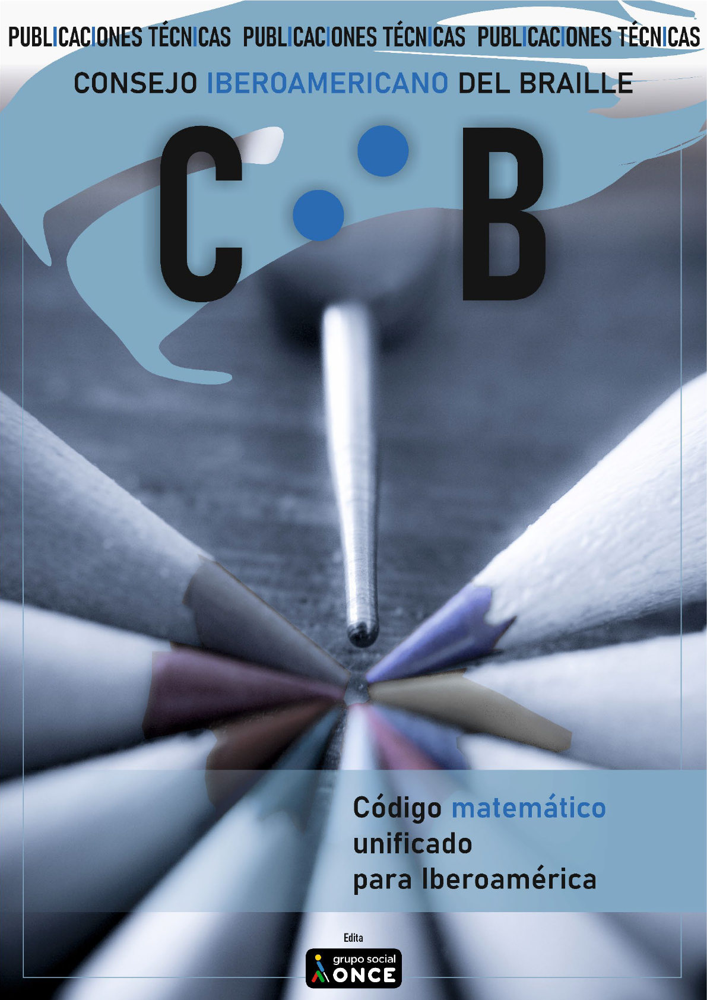
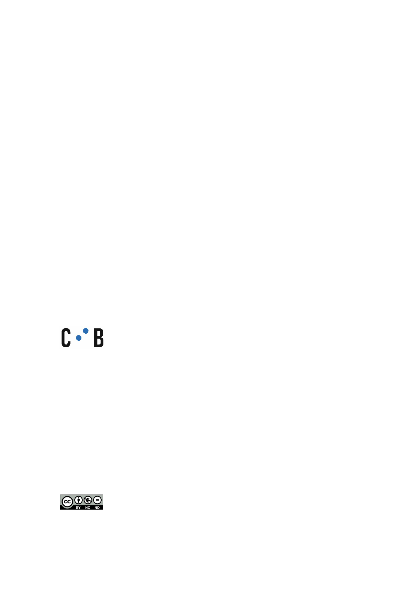
Código matemático unificado para Iberoamérica
© Consejo Iberoamericano del Braille
Marzo de 2023
Comisión Técnica de Ciencias
Integrantes: José Eduardo Badilla Mora · Juan José Della Barca · Paulo Coelho · Miriam Graciela Jorge ·
Patricia Neves Raposo · Pedro Ruiz Prieto
Coordinación: Jaime Muñoz Carenas
Edita:
Grupo Social ONCE
Calle del Prado, 24; 28014 Madrid (España)
Edición y fotografía de cubierta: Francisco J. Martínez Calvo
Reconocimiento-NoComercial-SinObraDerivada
C
C BY-NC-ND
Esta licencia Creative Commons le permite descargar el documento e imprimirlo para su uso personal, así como compartirlo
con otras personas, siempre que se reconozca su autoría. No permite cambiar de ninguna manera su contenido ni utilizarlo
comercialmente.

Publicaciones técnicas del Consejo Iberoamericano del Braille
3
Índice
Introducción
................................................................................................
............................................. 7
C
onvenios de representación
.............................................................................................................
9
C
apítulo 1.
C
aracteres literales
...........................................................................................................
12
Prefijos distintivos ............................................................................................................................. 12
1.
1.
C
aracteres latinos
...................................................................................................................
12
1.
2.
C
aracteres griegos
..................................................................................................................
14
1.
3.
V
ariantes tipográficas del alfabeto latino
...............................................................................
15
Pri
mera variante tipográfica .................................................................................................. 15
S
egunda variante tipográfica ................................................................................................ 17
C
apítulo 2.
C
ifras y números
...............................................................................................................
17
2.1. Cifras o guarismos ................................................................................................................... 17
2.
2.
N
úmeros enteros
....................................................................................................................
18
2.
3.
N
úmeros decimales
................................................................................................................
18
2.
4.
Nú
meros fraccionarios
............................................................................................................
19
2.
5.
R
epresentaciones especiales
..................................................................................................
20
a) N
úmeros especiales
........................................................................................................
20
b) N
úmeros que incluyen letras con valor numérico
..........................................................
20
c)
N
úmeros con cifras e
n variante tipográfica o de color .................................................. 21
d) N
úmeros con indicación de la base de numeración
.......................................................
21
2.
6.
R
epresentación de conjuntos numéricos
...............................................................................
22
C
apítulo 3.
D
elimitadores
....................................................................................................................
22
3.
1.
D
elimitadores en horizontal
...................................................................................................
22
3.
2.
D
elimitadores en vertical
........................................................................................................
25
3.
3.
E
structuras bidimensionales (matrices, determinantes y tablas)
.........................................
27
3.3.1. Representación bidimensional explícita .................................................................... 28
3.
3.2.
R
epresentación braille semilinealizada
.....................................................................
33
3.
4.
D
elimitación de regiones en el seno de una estructura bidimensional
................................
. 38
3.4.1. Regiones en estructuras bidimensionales representadas en braille en forma
explícita
.....................................................................................................................
38
3.
4.2.
Re
giones en estructuras bidimensionales representadas en braille en forma
semilinealizada
..........................................................................................................
42
Ca
pítulo 4.
Í
ndices y marcas
................................................................................................................
44
4.1. Posiciones ............................................................................................................................... 44
4.
2.
Í
ndices
................................................................................................
..................................... 45
4.2.
1.
C
aso general
..............................................................................................................
45

Publicaciones técnicas del Consejo Iberoamericano del Braille
4
4.2.2. Subíndices numéricos ................................................................................................ 46
4.
3.
M
arcas
................................................................................................
.................................... 47
4.
3.1.
M
arcas en superíndice a la derecha ......................................................................... 47
4.3.2. Marcas en superescrito ............................................................................................. 49
4.
3.3.
M
arcas en suscrito
....................................................................................................
50
4.
3.4.
M
arcas en subíndice a la derecha o a la izquierda o superíndice a la izquierda
......
51
4.
4.
S
ímbolos afectados por varios índices y/o marcas
................................................................
. 51
4.4.1. Orden de escritura..................................................................................................... 51
4.
4.2.
Í
ndices desplazados
...................................................................................................
52
C
apítulo 5.
O
peradores aritméticos y algebraicos
..............................................................................
53
5.1. Operaciones aritméticas elementales .................................................................................... 53
5.
2.
P
otencias y raíces
....................................................................................................................
55
5.
2.1.
P
otencias
...................................................................................................................
55
5.
2.2.
R
aíces
........................................................................................................................
56
5.3. Combinatoria .......................................................................................................................... 57
5.
4.
O
tros operadores
....................................................................................................................
58
5.5. Op
eradores sobre conjuntos de números
..............................................................................
58
5.
5.1.
S
umatoria o sumatorio
.............................................................................................
58
5.
5.2.
P
roductoria o productorio
.........................................................................................
59
5.
5.3.
C
oproductorio o coproductoria ................................................................................. 59
5.
6.
O
peradores sobre estructuras bidimensionales
.....................................................................
60
C
apítulo 6.
R
elaciones aritméticas y algebraicas
................................................................................
61
6.1. Relaciones ............................................................................................................................... 61
6.
2.
R
elaciones negadas
.................................................................................................................
63
C
apítulo 7.
T
eoría de conjuntos
..........................................................................................................
64
7.
1.
C
onceptos básicos
..................................................................................................................
64
7.
2.
O
peraciones entre conjuntos
................................................................................................
. 65
7.
3.
R
elaci
ones entre los elementos de un conjunto
....................................................................
66
7.
4.
C
ardinales
...............................................................................................................................
67
Capítulo 8. Lógica ................................................................................................................................. 67
8.
1.
C
uantificadores
.......................................................................................................................
67
8.
2.
L
ógica de proposiciones
..........................................................................................................
67
C
apítul
o 9.
A
nálisis y cálculo
...............................................................................................................
68
9.
1.
Ge
neralidades
.........................................................................................................................
68
E
scritura de pares ordenados
................................................................................................
69
Función a trozos ..................................................................................................................... 72
I
ntervalos
...............................................................................................................................
72

Publicaciones técnicas del Consejo Iberoamericano del Braille
5
9.2. Límites ..................................................................................................................................... 73
9.3. De
rivadas y diferenciales
........................................................................................................ 75
De
rivada de una función
........................................................................................................
75
Derivada de orden n ............................................................................................................... 75
D
erivada parcial
.....................................................................................................................
76
D
erivada parcial n-ésima
.......................................................................................................
77
N
abla, laplaciano, d’alambertiano
........................................................................................
78
9.4. Integrales ................................................................................................................................ 79
C
apítulo 10.
F
unciones clásicas
.............................................................................................................
80
10.
1.
S
ucesiones, progresiones y series
...........................................................................................
80
10.1.1. Sucesiones ................................................................................................................. 80
10.
1.2.
Pro
gresiones
..............................................................................................................
81
10.
1.3.
S
eries
.........................................................................................................................
81
10.
2.
F
unciones representadas por símbolos/notaciones literales
.................................................
81
10.2.1. Funciones exponenciales y logarítmicas ................................................................... 82
10.
2.2.
Funci
ones trigonométricas (circulares)
.....................................................................
83
10.
2.3.
Funci
ones hiperbólicas
..............................................................................................
84
10.2.4. Otras funciones, parámetros y características representadas por símbolos ............ 85
C
apítul
o 11.
G
eometría y vectores
........................................................................................................
86
11.
1.
E
lementos geométricos
..........................................................................................................
86
11.
2.
V
ectores
................................................................................................
.................................. 87
11.3. Relaciones geométricas .......................................................................................................... 88
11.
4.
O
peraciones entre elementos geométricos
...........................................................................
89
11.
5.
M
edidas de ángulos
................................................................................................................
90
11.6. Polígonos y curvas .................................................................................................................. 91
C
apítulo 12.
Es
tadística y probabilidad
................................................................................................
. 92
C
apítulo 13.
Ma
temáticas financieras
...................................................................................................
94
C
apítulo 14.
C
riterios de adaptación y edición
.....................................................................................
95
14.1. Aspectos a tener en cuenta en la escritura de textos matemáticos ...................................... 95
14.2. P
artición de expresiones matemáticas
...................................................................................
96
14.
3.
O
tros aspectos a considerar
...................................................................................................
99
14.4. Resaltado y coloreado de elementos y expresiones ............................................................ 101
14.
5.
E
spacios para cumplimentación o rellenado dentro de expresiones matemáticas
.............
102
A
péndic
e 1. Unidades matemáticas y físicoquímicas
........................................................................
104
1.
1. Unidades físicoquímicas fundamentales
.................................................................................
104
1.
2. Unidades físicoquímicas derivadas
..........................................................................................
105
1.
3. Prefijos para múltiplos y submúltiplos
.....................................................................................
106

Publicaciones técnicas del Consejo Iberoamericano del Braille
6
Apéndice 2 ......................................................................................................................................... 108
2.
1. Ordinales
................................................................................................
.................................. 108
2.
2. Numeración romana
................................................................................................................
108
2.3. Monedas .................................................................................................................................. 108
A
péndice 3. Combinaciones de flechas y puntos
...............................................................................
110

Publicaciones técnicas del Consejo Iberoamericano del Braille
7
Introducción
En todas las áreas del conocimiento han surgido nuevos contenidos y formas de
representarlos. El acceso a toda esa información es un derecho universal e irrestricto.
Durante todos estos años, ha ido apareciendo la necesidad de representar notaciones
y expresiones matemáticas no contempladas en la versión inicial del Código
Matemático Unificado (CMU) de 1987 (estadística, matemáticas financieras,
representaciones bidimensionales, algunos delimitadores, recursos tipográficos que
no se usaban en aquellos años, etc.) o aparecidas con posterioridad en el ámbito
educativo o científico general.
El braille es un organismo vivo que, además, en los últimos lustros, viene
demostrando una vitalidad pasmosa. Permanece inacabado, desplegando una
potencialidad que honra a su inventor.
En particular, la signografía braille de matemáticas y de otras disciplinas científicas es
una herramienta abierta, flexible y dinámica, con capacidad de afrontar los desafíos y
cambios continuos en la representación gráfica de expresiones matemáticas.
Por otro lado, la educación inclusiva ha supuesto la participación de un mayor
número de estudiantes con discapacidad visual tanto en niveles medios como
superiores, lo que ha motivado la necesidad de actualizar la representación de
algunas de las expresiones utilizadas en el aula de matemáticas. Es una signografía
que, por supuesto, abarca diferentes etapas educativas y permite representar
símbolos tanto a nivel elemental como a nivel superior.
Esa dinámica social
y educativa llevó al Consejo Iberoamericano del Braille (CIB),
formado por representantes de los países de lengua castellana y portuguesa, a
considerar la necesidad de una actualización del Código Matemático Unificado y a
decidir, para ello, la conformación de una Comisión Técnica de Ciencias, dedicada al
estudio amplio y profundo de los contenidos de matemáticas, sus representaciones y
aplicación correcta utilizando el sistema braille. La presente actualización del CMU es
el resultado del trabajo de esa comisión.
Por todo lo expuesto, este código y sus normas de representación braille están
sujetos a nuevas ampliaciones y modificaciones que impongan en el futuro su
aplicación y la evolución de los procesos educativos y científicos.
Tomando como base la validez y consistencia de la mayoría de los signos aprobados
en 1987, el resultado final de esta actualización ha sido la incorporación de nuevos
signos y representaciones, así como algunas modificaciones que se consideran
necesarias.
Una novedad de la versión 2023 del CMU es su publicación en lengua castellana y
portuguesa.
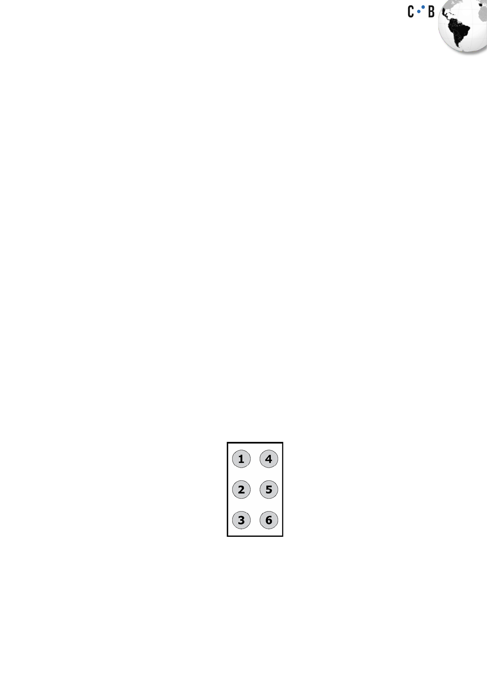
Publicaciones técnicas del Consejo Iberoamericano del Braille
8
La actualización del código se ha hecho teniendo en cuenta:
• Que es la herramienta de lectoescritura de los estudiantes usuarios del braille
dentro de la novedad que supone la realidad generalizada de la «educación
inclusiva».
• Las necesidades de los profesionales de la matemática usuarios del braille.
• Las necesidades del estudiantado usuario del braille, detectadas por los
docentes en su quehacer diario dentro del aula de matemáticas. Un buen uso
del código supone una mayor facilidad de escritura por el estudiante ciego y
evita algunos equívocos observados en la lectura braille.
• Las nuevas tecnologías, que cada vez están más presentes dentro del aula y en
la educación de las personas ciegas.
• Las exigencias, actuales o futuras, de la edición y transcripción digitales, que,
para producir textos braille con mayor calidad, requieren del empleo de un
código apropiado.
• Que se han dado pautas de transcripción que nos han permitido no ser
exhaustivos en la enumeración de representaciones puntuales.
• Se ha tenido en cuenta la representación gráfica de los símbolos visuales como
posiciones relativas, salvo en algunos signos muy utilizados, como el de sumar
o el de igualdad, en los que se tiene en cuenta el significado.
A lo largo de los capít
ulos de esta nueva edición del Código Matemático Unificado se
hace alusión a las series en las que se dividen las combinaciones que se forman con
los seis puntos del signo generador braille.
La asignación de puntos para representar un carácter braille es:
P
or ejemplo, el carácter braille que representa a la letra z está formado por los
puntos 1, 3, 5 y 6:
z

Publicaciones técnicas del Consejo Iberoamericano del Braille
9
A continuación, se incluyen las siete series:
Serie 1.ª: se utilizan los puntos 1, 2, 4 y 5.
A b c d e f g h i j
Serie 2.ª: se agrega el punto 3 a las combinaciones de la 1.ª serie.
K l m n o p q r s t
Serie 3.ª: se agrega el punto 6 a las combinaciones de la 2.ª serie.
U v x y z ç \ á é ú
Serie 4.ª: se agrega el punto 6 a las combinaciones de la 1.ª serie.
§ ( Œ ¥ Ý ë ñ ü ö w
Serie 5.ª: se baja una posición a los puntos de la 1.ª serie, puntos 2, 3, 5 y 6.
, ; : * ¿ + = [ } ]
Serie 6.ª: puntos 3, 4, 5 y 6.
Í ) # ó - .
Serie 7.ª: puntos 4, 5 y 6.
¾ ^ % » _ @ {
Convenios de representación
A lo largo de los capítulos que componen este código, los signos se irán presentando
en tablas con una serie de columnas: signo visual, signo en braille, número de los
puntos braille que forman el signo y significado.
En la columna r
espectiva, la enumeración de los puntos braille que forman cada signo
se ajusta a los siguientes convenios:
• El signo braille se representa por un número formado por los dígitos de cada
uno de los puntos que lo componen.
Ejemplo:
p puntos braille: 1234
• Cuan
do un signo braille conste de más de una celda, los puntos de cada
carácter braille se separan del anterior y del siguiente con un guion.

Publicaciones técnicas del Consejo Iberoamericano del Braille
10
Ejemplo:
{n puntos braille: 46-1345
• Cuando el espacio en blanco forma parte de un signo se representa con 0.
Ejemplo:
l puntos braille: 0-123-0
• Se entenderá por «semicajetín en blanco» cuando una de las columnas del
cajetín braille no tenga ningún punto.
• Cuando un signo exija tener un semicajetín en blanco a continuación (a
su derecha) se representa 0D.
Ejemplos del signo 456-0D. Obsérvese que, en este primer caso, el cajetín que
viene a continuación no contiene ninguno de los puntos 1, 2 o 3:
%{p puntos braille: 456-0D-46-1234
Sin embargo, en este otro caso sí que los tiene, por lo que es necesario dejar
un cajetín sin ningún punto entre ambos caracteres:
% p puntos braille: 456-0-1234
• Cuando un signo deba ir precedido de un semicajetín en blanco (a su izquierda)
se representa como I0.
Ejemplos del signo I0-123. Obsérvese que, en este primer caso, el cajetín
anterior no contiene ninguno de los puntos 4, 5 o 6:
Kl puntos braille: 13-I0-123
Sin embar
go, en este caso sí que los tiene, por lo que es necesario dejar un
cajetín sin ningún punto entre ambos caracteres:
# l puntos braille: 3456-0-123
• A lo largo del texto, a veces se hace referencia a «signos o números en
posición baja». Con ello se hace referencia a la totalidad de los signos de la 5.ª
serie.
Se incluyen numerosos ejemplos con el objetivo de clarificar el uso de los signos.
El código se ha estructurado en 14 capítulos y tres apéndices. Se recomienda leer el
capítulo 14. Criterios de adaptación y edición, antes de encarar la utilización del
código.

Publicaciones técnicas del Consejo Iberoamericano del Braille
11
Algunos aspectos a destacar del código son:
1. Novedades.
• Se contempla la distinción de colores y cambios de tipografía dentro de
expresiones numéricas y matemáticas (capítulos 1 y 2).
• Se ha modificado la representación de los números fraccionarios (Capítulo 2).
• Se agregó la representación de otros delimitadores en horizontal (Capítulo 3).
• Representación diferenciada de expresiones bidimensionales (sistemas,
matrices, determinantes, etc.) en formatos desarrollados y semilinealizados
(Capítulo 3).
• Se recogen signos para estadística y matemática financiera en sus notaciones
más frecuentes (capítulos 12 y 13).
• Se contemplan, también, cuestiones relativas a adaptación al braille de nuevos
recursos tipográficos utilizados en la edición de los actuales libros de texto
que, muchas veces, se emplean con fines didácticos, como la representación
braille de «espacios en blanco» o «a rellenar», y expresiones o caracteres y
signos subrayados, tachados y en color (Capítulo 14).
• Se establecen normas sobre la partición de expresiones matemáticas que
exceden el número de caracteres de la impresión braille (Capítulo 14).
• Se incluyen representaciones abreviadas y alternativas que permiten cierta
flexibilidad para la toma de apuntes por parte del alumnado o para manejo en
editores (trigonométricas, límites, derivadas…) (capítulos 9 y 10).
• Se incluyen rep
resentaciones braille de «unidades fisicoquímicas» (o «álgebra
de cantidades») siguiendo los acuerdos internacionales recogidos en la 9.ª
edición de 2019 del Sistema Internacional de Unidades (Apéndice 1).
2. Recomendaciones para ediciones en braille.
• Se recomienda (fundamentalmente a los editores) que en los textos de
ciencias se incluyan tablas con los signos utilizados y su significado.
• Conviene dar a conocer cuál es la función y el uso de los paréntesis auxiliares
cuando aparezcan por primera vez en un texto, dado que se trata de un
recurso propio del sistema braille (Capítulo 3).
• Cuando aparezca una expresión matemática dentro de un texto, deberán
dejarse dos espacios antes y dos después (Capítulo 14).
• Para evitar posibles confusiones, se recomienda no utilizar la estenografía
braille en los textos de ciencias exactas o naturales.

Publicaciones técnicas del Consejo Iberoamericano del Braille
12
Capítulo 1. Caracteres literales
Prefijos distintivos
En el Código Matemático Unificado aprobado en Montevideo (Uruguay) en junio de
1987 se introdujo el concepto de «prefijos alfabéticos». Esto suponía que, tomando
como base las letras latinas minúsculas, cada uno de estos prefijos las caracterizaba
como letras de un alfabeto, según el signo fijado para ser el distintivo de cada uno de
ellos. También las latinas minúsculas tenían su prefijo, pues era necesario, por
ejemplo, evitar confusiones entre números y letras.
Este concepto se mantiene en el fondo y también en la forma, pero es necesario
hacer algunas precisiones.
A) Exceptuando las letras latinas minúsculas, en las que se omite el prefijo salvo
para evitar confusiones, se ha de considerar cada letra (sea cual sea el
alfabeto) como un signo braille formado por dos caracteres inseparables
—prefijo + letra base— y considerarlo como cualquier otro signo que ocupa
dos celdas. Esto significará que, en expresiones matemáticas, ningún prefijo
(ni siquiera el de las letras latinas minúsculas de la «a» a la «j» dentro de
expresiones numéricas) tendrá validez para varias letras consecutivas.
B) Puesto que la función de «prefijo alfabético» no es la única que ejercen los
signos braille elegidos para ello (precisamente, son bastante empleados para
marcas), hay que tener cuidado de no crear confusiones, aplicando para las
letras latinas minúsculas un uso correcto del punto 5 cuando es utilizado como
«prefijo de latina minúscula».
C) De lo dicho se ded
uce que en las expresiones numéricas que contienen letras,
en las que no siempre todas ellas van al final, todos los caracteres braille de la
serie 1.ª no precedidos del punto 5 tienen valor numérico. Es decir, son cifras.
Ejemplos:
234a5
#bcd@Ae
234ae
#bcd@A@e
Adem
ás de lo expresado más adelante en este capítulo, otros ejemplos del uso del
punto 5 serán tratados en detalle en los capítulos correspondientes.
1.1. Caracteres latinos
Se incluyen solo las letras del alfabeto latino que se utilizan en matemáticas.
Publicaciones técnicas del Consejo Iberoamericano del Braille
13
Letra
minúscula
Signo
braille
Puntos
braille
Letra
mayúscula
Signo
braille
Puntos
braille
a
A
1 A
{a
46-1
b
b
12 B
{b
46-12
c
c
14 C
{c
46-14
d
d
145 D
{d
46-145
e
e
15 E
{e
46-15
f
f
124 F
{f
46-124
g
g
1245 G
{g
46-1245
h
h
125 H
{h
46-125
i
i
24 I
{i
46-24
j
j
245 J
{j
46-245
k
K
13 K
{k
46-13
l
l
123 L
{l
46-123
m
m
134 M
{m
46-134
n
n
1345 N
{n
46-1345
o
o
135 O
{o
46-135
p
p
1234 P
{p
46-1234
q
q
12345 Q
{q
46-12345
r
r
1235 R
{r
46-1235
s
s
234 S
{s
46-234
t
t
2345 T
{t
46-2345
u
U
136 U
{u
46-136
v
v
1236 V
{v
46-1236
w
w
2456 W
{w
46-2456
x
x
1346 X
{X
46-1346
y
y
13456 Y
{y
46-13456
z
z
1356 Z
{z
46-1356
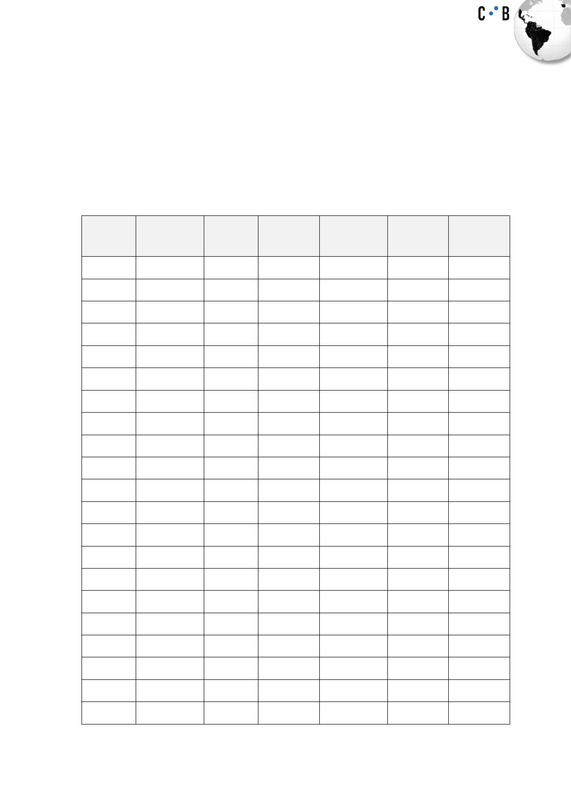
Publicaciones técnicas del Consejo Iberoamericano del Braille
14
En caso de que las letras minúsculas puedan dar lugar a confusión al formar parte de
signos o expresiones, deberán ir precedidas del carácter
@
(5), denominado «prefijo
de latina minúscula».
El carácter braille
{
(46), que forma parte inseparable de las letras latinas
mayúsculas, se denomina «prefijo de latina mayúscula».
1.2. Caracteres griegos
Nombre
Letra
minúscula
Signo
braille
Puntos
braille
Letra
mayúscula
Signo
braille
Puntos
braille
alfa α
¾A
4-1 Α
^A
45-1
beta β
¾b
4-12 Β
^b
45-12
gamma γ
¾g
4-1245 Γ
^g
45-1245
delta δ
¾d
4-145 Δ
^d
45-145
épsilon ε
¾e
4-15 Ε
^e
45-15
dseta ζ
¾z
4-1356 Ζ
^z
45-1356
eta η
¾Ý
4-156 Η
^Ý
45-156
zeta θ
¾¥
4-1456 Θ
^¥
45-1456
iota ι
¾i
4-24 Ι
^i
45-24
kappa κ
¾K
4-13 Κ
^K
45-13
lambda λ
¾l
4-123 Λ
^l
45-123
mi μ
¾m
4-134 Μ
^m
45-134
ni ν
¾n
4-1345 Ν
^n
45-1345
xi ξ
¾x
4-1346 Ξ
^x
45-1346
ómicron ο
¾o
4-135 Ο
^o
45-135
pi π
¾p
4-1234 Π
^p
45-1234
ro ρ
¾r
4-1235 Ρ
^r
45-1235
sigma ς σ
¾s
4-234 Σ
^s
45-234
tau τ
¾t
4-2345 Τ
^t
45-2345
ípsilon υ
¾U
4-136 Υ
^U
45-136
fi φ
¾f
4-124 Φ
^f
45-124
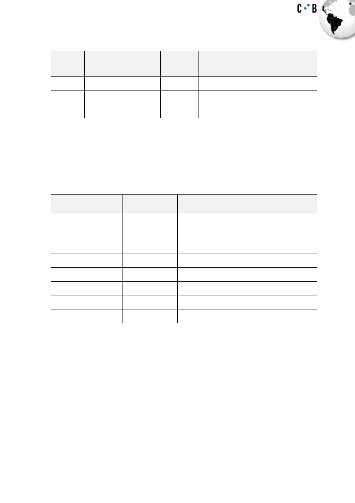
Publicaciones técnicas del Consejo Iberoamericano del Braille
15
Nombre
Letra
minúscula
Signo
braille
Puntos
braille
Letra
mayúscula
Signo
braille
Puntos
braille
ji χ
¾ç
4-12346 Χ
^ç
45-12346
psi ψ
¾y
4-13456 Ψ
^y
45-13456
omega ω
¾w
4-2456 Ω
^w
45-2456
El carácter
¾
(4), que forma parte inseparable de las letras griegas minúsculas, se
denomina «prefijo de griega minúscula».
El carácter
^
(45), que forma parte inseparable de las letras griegas mayúsculas, se
denomina «prefijo de griega mayúscula».
Otros caracteres griegos de uso común que llevan prefijo diferente son:
Nombre Signo visual Signo braille Puntos braille
varzeta ϑ
¾ó¥
4-346-1456
varépsilon ε
¾óe
4-346-15
varro ϱ
¾ór
4-346-1235
varpi ϖ
¾óp
4-346-1234
varsigma Ϛ
¾ós
4-346-234
varfi φ
¾óf
4-346-124
varkappa ϰ
¾óK
4-346-13
digamma Ϝ
%v
456-1236
1.3. Variantes tipográficas del alfabeto latino
Los diferentes tipos de letra, ya sea porque pertenecen a otro juego de caracteres
(como ocurre con las letras góticas) o porque en su representación se emplean
distintos recursos tipográficos (tales como colores, efectos de sombreado,
contornos...), requerirán para su representación en braille los siguientes recursos.
Primera variante tipográfica
El carácter
_
(6), que forma parte inseparable de esta primera variante tipográfica,
se aplica preferentemente para diferenciar las letras minúsculas con una tipografía
distinta de la base; en particular, la letra gótica.
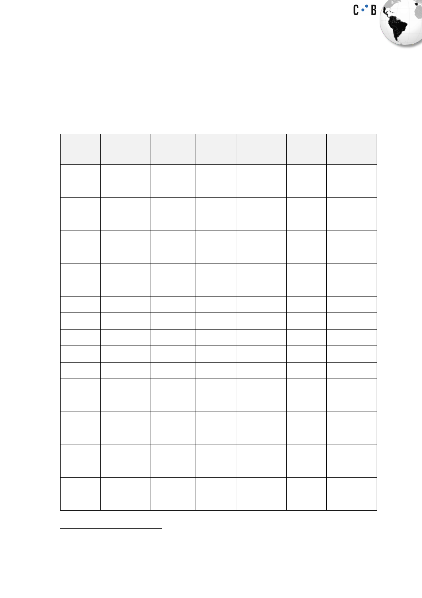
Publicaciones técnicas del Consejo Iberoamericano del Braille
16
El carácter
»
(56), que forma parte inseparable de esta primera variante tipográfica,
se aplica preferentemente para diferenciar las letras mayúsculas con una tipografía
distinta de la base; en particular, la letra gótica.
1
En
la tabla que viene a continuación se ha utilizado el juego de caracteres conocido
en Unicode como «Mathematical Bold Fraktur», simplemente a modo de ejemplo.
Carácter
latino
Letra
minúscula
Carácter
braille
Puntos
braille
Letra
mayúscula
Carácter
braille
Puntos
braille
a/A
_A
6-1
»A
56-1
b/B
_b
6-12
»b
56-12
c/C
_c
6-14
»c
56-14
d/D
_d
6-145
»d
56-145
e/E
_e
6-15
»e
56-15
f/F
_f
6-124
»f
56-124
g/G
_g
6-1245
»g
56-1245
h/H
_h
6-125
»h
56-125
i/I
_i
6-24
»i
56-24
j/J
_j
6-245
»j
56-245
k/K
_K
6-13
»K
56-13
l/L
_l
6-123
»l
56-123
m/M
_m
6-134
»m
56-134
n/N
_n
6-1345
»n
56-1345
o/O
_o
6-135
»o
56-135
p/P
_p
6-1234
»p
56-1234
q/Q
_q
6-12345
»q
56-12345
r/R
_r
6-1235
»r
56-1235
s/S
_s
6-234
»s
56-234
t/T
_t
6-2345
»t
56-2345
u/U
_U
6-136
»U
56-136
1
Ver en el capítulo 14 el uso del 56 como signo de espacio a rellenar.
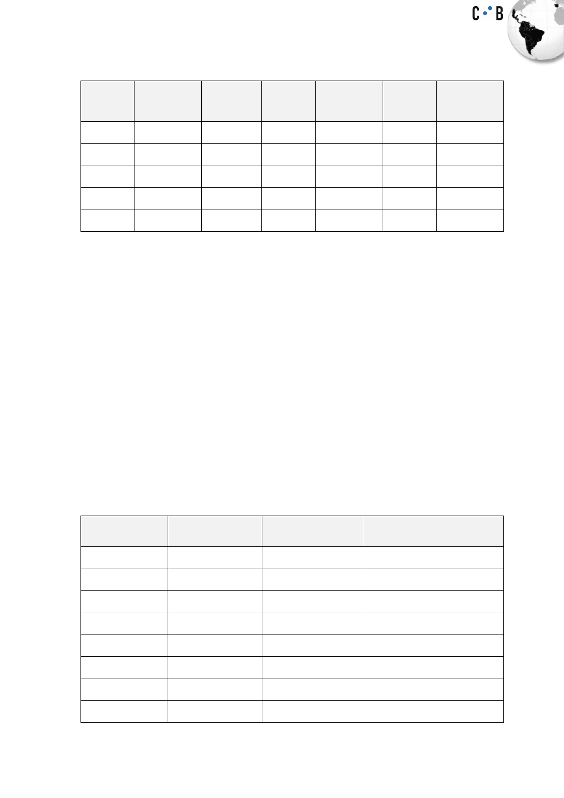
Publicaciones técnicas del Consejo Iberoamericano del Braille
17
Carácter
latino
Letra
minúscula
Carácter
braille
Puntos
braille
Letra
mayúscula
Carácter
braille
Puntos
braille
v/V
_v
6-1236
»v
56-1236
w/W
_w
6-2456
»w
56-2456
x/X
_x
6-1346
»x
56-1346
y/Y
_y
6-13456
»y
56-13456
z/Z
_z
6-1356
»z
56-1356
Segunda variante tipográfica
Si, además, fuera necesario distinguir una variante tipográfica más, se utilizará el
prefijo inseparable
ó
(346) para las minúsculas y
Œ
(146) para las mayúsculas.
Nota: en la edición de expresiones matemáticas en braille, para caracteres literales y
sus tipografías solamente se emplearán los signos recogidos en este capítulo, salvo
que en otros capítulos se disponga otra forma de representación para la cual deberá
adjuntarse nota aclaratoria y lo que se establece en el capítulo 14 a propósito de
Criterios de adaptación y edición o las indicaciones que pudieran recogerse como
«notas de transcripción braille».
Capítulo 2. Cifras y números
2.1. Cifras o guarismos
Se representan por los caracteres braille de la primera serie precedidos de
#
(3456).
Signo visual Signo braille Puntos braille Significado
1
#A
3456-1 uno
2
#b
3456-12 dos
3
#c
3456-14 tres
4
#d
3456-145 cuatro
5
#e
3456-15 cinco
6
#f
3456-124 seis
7
#g
3456-1245 siete
8
#h
3456-125 ocho
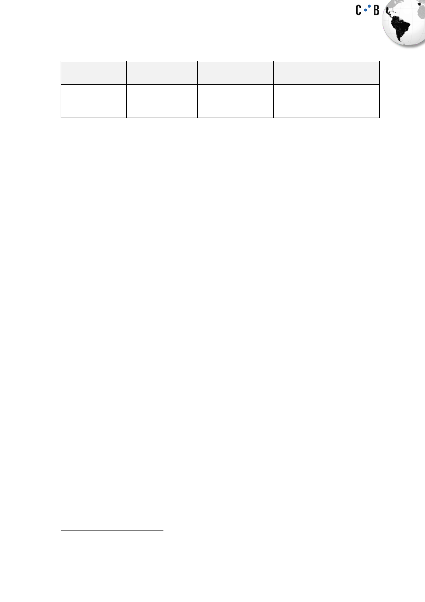
Publicaciones técnicas del Consejo Iberoamericano del Braille
18
Signo visual Signo braille Puntos braille Significado
9
#i
3456-24 nueve
0
#j
3456-245 cero
2.2. Números enteros
El signo
#
(3456) actúa como indicador para todos los dígitos del número, por lo que
solo aparece al principio de la cantidad.
Siempre que haya separación entre los grupos de cifras en caracteres visuales, en
braille se utilizará el punto 3 como separador.
Ejemplos:
31.720
#cA.gbj
3 802 197
#c.hjb.Aig
46781
#dfghA
Los n
úmeros negativos se representarán teniendo como primer carácter braille el
signo
-
(36).
2
E
jemplos:
-7
-#g
-29
-#bi
-25 347
-#be.cdg
2.3. Números decimales
El signo de separación de parte decimal en braille se representará con el elemento
,
(2), aun cuando en caracteres visuales aparezcan otros signos, tales como el punto.
Ejemplos:
3.2
#c,b tres enteros, dos décimas
2
El signo
-
(36) se corresponde con el signo de menos (ver capítulo 5. Operadores aritméticos y algebraicos).
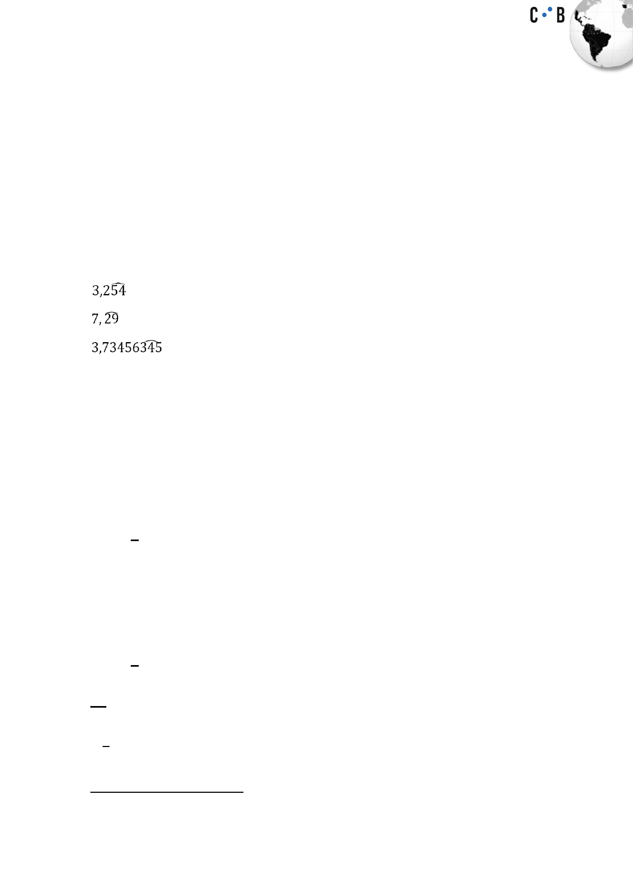
Publicaciones técnicas del Consejo Iberoamericano del Braille
19
3,2 #c,b tres enteros, dos décimas
3’2
#c,b tres enteros, dos décimas
En las expresiones decimales periódicas, el comienzo del periodo se transcribirá
mediante el punto 2, sea cual fuere su representación en caracteres visuales. Si se
considera necesario resaltar la representación de dicho periodo, se podrá acudir al
recurso de los paréntesis auxiliares
3
a continuación del punto 2 que marca el
comienzo del periodo.
Ejemplos:
#c,b,ed
#g,,bi
#c,gcdef,¿cde}
Las exp
resiones con puntos suspensivos en la parte decimal se escribirán con
...
(3-3-3):
3,1415…
#c,AdAe...
2.4. Números fraccionarios
En este apartado se tratan únicamente las fracciones enteras o números
fraccionarios.
¾ o
El numerador, precedido de signo numérico, se escribirá en la parte superior del
cajetín (1.ª serie). El denominador, a continuación, sin signo numérico, en la parte
inferior (5.ª serie), seguido de cajetín en blanco.
Ejemplos:
¾ o
#c* Tres cuartos
#ch+: Treinta y ocho sesentaitresavos
3
#c#A¿ Tres enteros y un quinto
3
Sobre el recurso de los paréntesis auxiliares ver capítulo 3.

Publicaciones técnicas del Consejo Iberoamericano del Braille
20
2.5. Representaciones especiales
a) Números especiales
Algunos números tienen representaciones especiales, como es el caso de:
• El número pi: π
¾p
(4-1234)
• El número e (base de los logaritmos naturales): e
e
(15)
• El número i (unidad imaginaria): i
i
(24)
Ejemplos:
π=3,141592…
¾p=#c,AdAeib...
e=2,718281…
e=#b,gAhbhA...
1+2i
#a+#b@i
En este ejemplo, se puede observar que se ha utilizado el punto 5
@
antes de la letra
«i», con la que se representa la unidad imaginaria, para indicar que es una letra latina
minúscula de la primera serie en vez de una cifra.
b) Números que incluyen letras con valor numérico
El signo
#
(3456) actúa como indicador para todos los dígitos del número, ya sean
cifras o estén representados por letras (como ocurre con los números en bases
superiores a 10), por lo que solo aparece al principio de la cantidad.
Las letras se representan como se indica en el capítulo 1 y, en este caso, las
minúsculas latinas de la «a» a la «j» irán precedidas del carácter braille
@
(5) para
indicar su condición de latina minúscula.
Ejemplos:
1B4D
#a{bd{d
1b4d
#A@bd@d
14bd
#Ad@b@d
b1d4
#@bA@dd
1axb
#A@Ax@b
Publicaciones técnicas del Consejo Iberoamericano del Braille
21
c) Números con cifras en variante tipográfica o de color
Cuando en los números existe variante tipográfica o de color con carácter
significativo, se transcribirán haciendo preceder al signo numérico del prefijo
»
(56).
Ejemplo:
24 »#bd
En caso de aparecer una segunda variante tipográfica o de color, podrá utilizarse el
signo
Œ
(146).
4
En ca
so de que se presenten variantes tipográficas o de color en cifras determinadas
de un mismo número, el indicador correspondiente precederá inmediatamente a la
respectiva cifra.
El texto en el cual se presente esta situación deberá necesariamente incluir una nota
aclaratoria.
Ejemplo: 3429, donde la cifra 4 es roja y la 9 es verde. El texto donde aparezca esta
distinción comenzará con una nota:
«En lo que sig
ue, el signo
Œ
(146) indica que el carácter ubicado
inmediatamente a su derecha es rojo, y el signo
»
(56) indicará que el carácter
ubicado inmediatamente a su derecha es verde»:
#cŒdb»i
d) Números con indicación de la base de numeración
En la representación visual de números en distinta base, esta se suele escribir en
subíndice a la derecha a continuación de las cifras que forman el número.
En braille, el signo de subíndice a la derecha se representa con
Í
(34) (ver capítulo 4.
Índices y marcas) y se escribe a continuación de las cifras del número y antes de la
cifra que indica la base.
101
2
#AjAÍ#b Número 101 en base 2
4
Como puede observarse en el capítulo 1. Caracteres literales, apartado 1.3, tanto
»
como
Œ
se
corresponden con algunos de los prefijos para variantes tipográficas de letras.
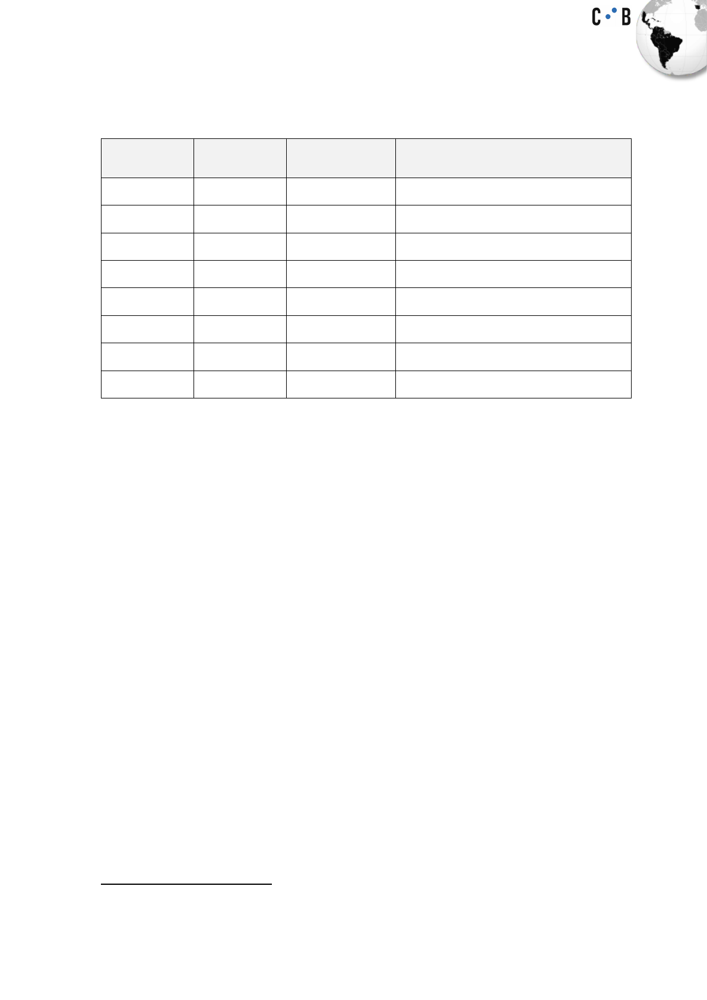
Publicaciones técnicas del Consejo Iberoamericano del Braille
22
2.6. Representación de conjuntos numéricos
Signo visual Signo braille Puntos braille Significado
%n
456-1345 números naturales
%z
456-1356 números enteros
%q
456-12345 números racionales
%r
456-1235 números reales
%c
456-14 números complejos
%h
456-125 cuaterniones
%o
456-135 números de Cailey (octoniones)
%p
456-1234 números primos
Ejemplo:
5
«El conjunto de los números reales, , está formado por...» se transcribe
en braille:
[{el conjUnto de los números
re
Ales, %r,
está form
Ado
por...[
Otras representaciones especiales pueden expresarse en braille acudiendo a las
variantes tipográficas consideradas en el capítulo 1. Por ejemplo, para los números
irracionales podría ser:
»i
(56-24)
I
»
i
(56-24)
Capítulo 3. Delimitadores
3.1. Delimitadores en horizontal
Se consideran como «delimitadores en horizontal» aquellos recursos gráficos que
separan o unifican expresiones escritas una a continuación de la otra, en la misma
línea. Por ejemplo, un intervalo numérico.
5
Para escritura de texto de matemáticas dentro de texto literario ver capítulo 14.
Publicaciones técnicas del Consejo Iberoamericano del Braille
23
Signo visual Signo braille Puntos braille Significado
(
(
126 abrir paréntesis
)
)
345 cerrar paréntesis
[
á
12356 abrir corchetes
]
ú
23456 cerrar corchetes
{
@l
5-123 abrir llaves
}
%,
456-2 cerrar llaves
@K
5-13 abrir paréntesis angulares
{,
46-2 cerrar paréntesis angulares
〚
@á
5-12356 abrir corchetes de clase
〛
ú,
23456-2 cerrar corchetes de clase
@)
5-345 abrir llaves especiales
(,
126-2 cerrar llaves especiales
|
%
456-0d barra vertical
ǁ
%l
456-123 doble barra
Específico
del braille
¿
26 abrir paréntesis auxiliares
Específico
del braille
}
35 cerrar paréntesis auxiliares
/
_,
6-2 barra oblicua
\
@.
5-3 barra inversa
,
,
0-2 coma de separación
.
.
0-3 punto de separación
;
;
0-23 punto y coma de separación
á,
12356-2 abrir techo
@ú
5-23456 cerrar techo
á.
12356-3 abrir suelo
_ú
6-23456 cerrar suelo
:
@,
5-2 dos puntos
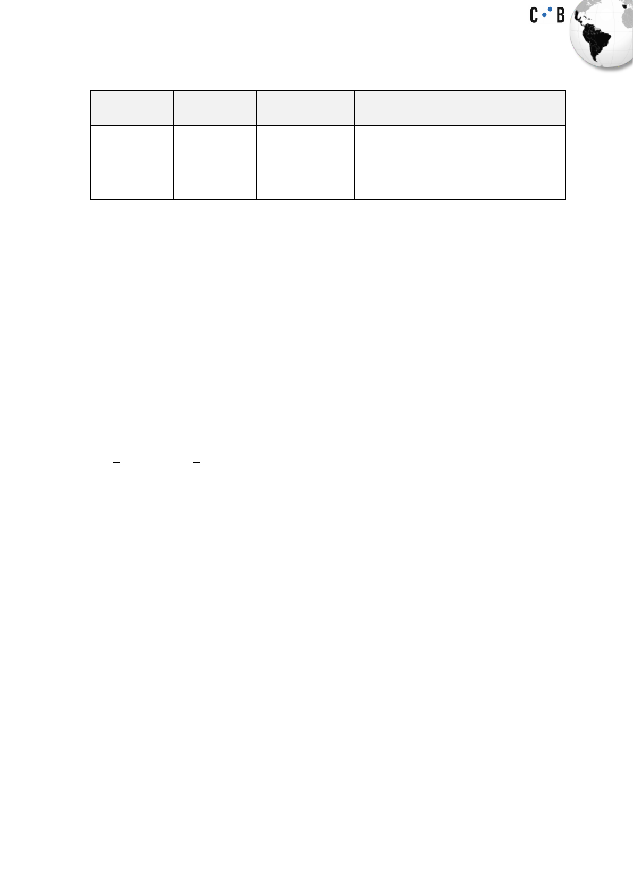
Publicaciones técnicas del Consejo Iberoamericano del Braille
24
Signo visual Signo braille Puntos braille Significado
-
-
0-36-0 guion corto
___
---
0-36-36-36-0 guion largo
?
¿
0-26-0 interrogación
Nota:
• Función techo es la que a cada número real asigna el número entero más
próximo por exceso, es decir, el menor número entero igual o mayor que ese
número real.
• Función suelo o parte entera es la que a cada número real asigna el mayor
número entero igual o menor que ese número real.
Nota: la aparición del espacio que precede a la coma, el punto, el punto y coma y el
signo de interrogación se justifica ante la necesidad de evitar confusión con los
números fraccionarios.
Ejemplos de algunos delimitadores en horizontal:
Ordenar de menor a mayor los números
3
2
, 1, 4, 7,8, 0,
1
3
, , 3,2
{ordenar de menor A mAyor los
números
#c; ,-#A ,#d ,#g,h ,#j ,#A: ,¾
p
,#c,b
La escala
es uno treinta mil,
1:30000
{la escAlA es Uno treintA mil,
#A@,#cjjjj
Nota: los p
aréntesis auxiliares no tienen su correspondiente signo en tinta.
Constituyen un recurso propio del braille para limitar ciertas expresiones que, en la
escritura visual, aparecen unificadas de diversas maneras, tales como el distinto
tamaño, distinto nivel respecto a la línea básica de la escritura, raya horizontal en las
fracciones y radicandos, etc. (ver, entre otros, los capítulos 4 y 5).
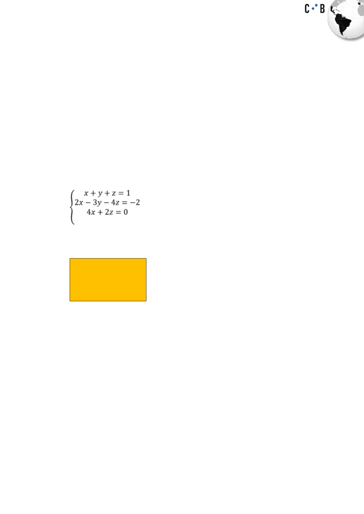
Publicaciones técnicas del Consejo Iberoamericano del Braille
25
Los paréntesis auxiliares pueden repetirse indefinidamente sin que haya lugar a
equívocos, ya que los signos de cierre se producen en orden inverso a las aperturas
correspondientes.
3.2. Delimitadores en vertical
Se consideran «delimitadores en vertical» los recursos gráficos que determinan dos o
más expresiones escritas una debajo de otra. Este es el caso de las llaves utilizadas
para abarcar las ecuaciones de un sistema y de las fórmulas que definen una «función
a trozos».
Por ejemplo, en un sistema de ecuaciones. En el siguiente caso el recurso gráfico es
una llave:
Sistema de ecuaciones
En este otr
o caso el recurso gráfico es un fondo de otro color:
Sistema de ecuaciones
+ + = 1
234= 2
4+ 2= 0
Con independencia del recurso gráfico empleado, en braille se transcribirá:
1.º) Línea en blanco.
2.º) Indicador de agrupamiento en vertical, que incluye:
• Signo de «delimitador en vertical»:
#p
(3456-1234) (sistema de ecuaciones) y
#t
(3456-2345) (función
a trozos)
• Número de expresiones a delimitar, como número ordinario,
#
(3456 +
signo braille de la 1.ª serie).
•
Signo
¥¥
(1456-1456) (sistema de ecuaciones) y
ü¥
(1256-1456)
(función a trozos).
• En su caso, t
ítulo o expresión de definición de la estructura.
3.º) Las expresiones a delimitar, en líneas independientes.
4.º) Línea en blanco, que se omitirá si coincide con el final de una página.
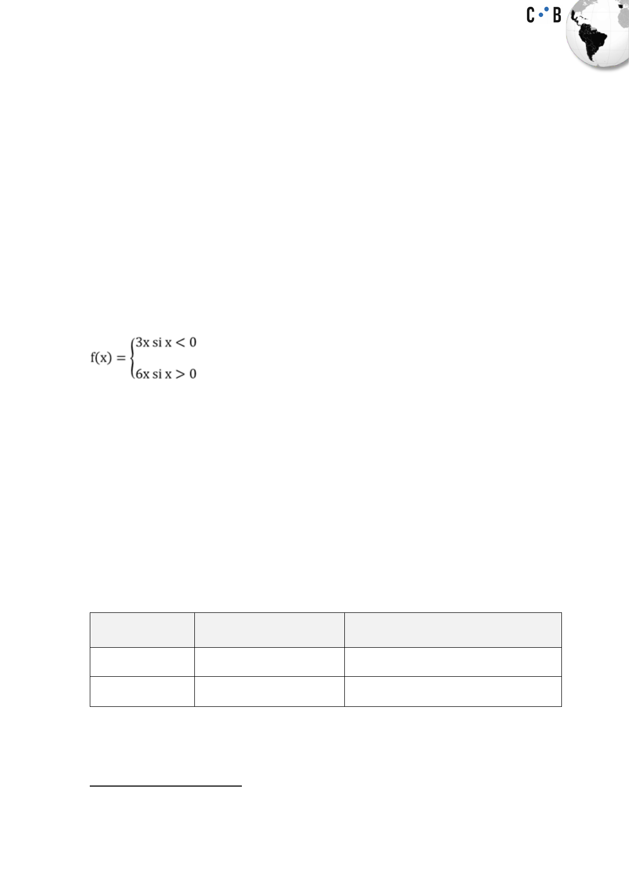
Publicaciones técnicas del Consejo Iberoamericano del Braille
26
Los dos ejemplos anteriores se escribirán en braille de la misma manera:
#p#c¥¥ {sistema
de ec
UAciones
X+y+z=#a
#bx-#cy-#
dz=-#b
#dX+#bz=#j
Todos estos elementos, salvo las líneas en blanco, deberán estar contenidos en la
misma página.
A continuación, figura un ejemplo con una función a trozos:
6
#t#bü¥ f(x)=
#cx si xö#j
#fx si xo
#j
Los signos de menor que (<) y mayor que (>) pueden encontrarse en el capítulo
6. Relaciones aritméticas y algebraicas. En braille se representan como
ö
y
o
,
respectivamente.
En resumen, los delimitadores para sistema de ecuaciones y función a trozos son:
Signo braille Puntos braille Significado
#p ¥¥
3456-1234 y 1456-1456 sistema de ecuaciones
#t ü¥
3456-2345 y 1256-1456 función a trozos
6
Ver funciones en el capítulo 9. Análisis y cálculo.
Publicaciones técnicas del Consejo Iberoamericano del Braille
27
3.3. Estructuras bidimensionales (matrices, determinantes
y tablas)
Se entenderá por «estructura bidimensional» toda ordenación espacial en filas y
columnas de cantidades numéricas o expresiones matemáticas individualizables de
cualquier tipo. Se llamará «elemento» en una de estas estructuras a cada una de
dichas cantidades o expresiones, independientemente de su tamaño y complejidad.
Como estructuras bidimensionales más características se consideran las «matrices»
(encerradas entre paréntesis curvos), los «determinantes» (entre barras verticales
sencillas) y las «tablas generales», en las que puedan distinguirse filas y columnas,
encerradas o no en un marco, con o sin cuadrícula, afectada gráficamente por un
determinado fondo, con aspecto rectangular o triangular, etc.
La representación braille de una estructura bidimensional (matriz, determinante,
tabla general o cuadro) incluye:
1.º) Línea en blanco.
2.º) El «indicativo de estructura», constituido por:
• El signo de inicio correspondiente a la estructura bidimensional:
Paréntesis curvos (habitualmente utilizados para matrices):
#s
(3456-234).
Barras verticales sencillas (habitualmente utilizados para
determinantes):
#l
(3456-123).
Cualquier otra representación (tablas generales):
#v
(3456-1236).
En este caso, debe incluirse Nota de transcripción, en la que se
describirá el recurso gráfico que determina la tabla en el original (por
ejemplo: tabla enmarcada, con fondo de un color determinado, etc.)
• Número de
filas (escritura ordinaria: signo de número, carácter en
«posición alta»).
• Signo de multiplicar («aspa»:
[
(236)).
7
• Nú
mero de columnas (escritura ordinaria: signo de número, carácter en
«posición alta»).
•
Sign
os
Ý¥
(156-1456) para matrices,
%¥
(456-1456) para
determinantes y
#¥
(3456-1456) para tablas.
• En su cas
o, título o expresión de definición de la estructura.
7
Ver capítulo 5. Operadores aritméticos y algebraicos.
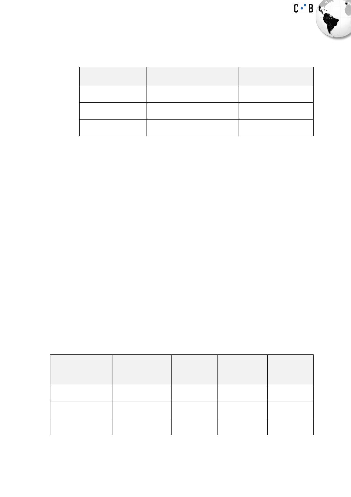
Publicaciones técnicas del Consejo Iberoamericano del Braille
28
En resumen, los delimitadores para matriz, determinante y sistema son:
Signo braille Puntos braille Significado
#s ݥ
3456-234 y 156-1456 matriz
#l %¥
3456-123 y 456-1456 determinante
#v #¥
3456-1236 y 3456-1456 tabla
3.º) La representación braille de la estructura bidimensional se podrá realizar de
dos formas:
• Representación bidimensional explícita, en la que se respetará, en la
medida de lo posible, la distribución espacial de los elementos; en
particular, la correspondencia en columnas (apartado 3.3.1).
• Representación semilinealizada, facilitadora de las tareas del estudiante
especialmente a la hora de tomar apuntes, en la que la correspondencia
espacial en columna tiene un valor secundario (apartado 3.3.2).
En la edición y transcripción de textos braille se recomienda incluir ambas
representaciones, separadas por una línea en blanco.
La primera, la explícita, se considera la más conveniente y deberá figurar
siempre. Por motivos didácticos, y para conocimiento del lector, debe
incluirse también la segunda forma, la semilinealizada, al menos en los
primeros ejemplos de cada obra o capítulo.
3.3.1. Representación bidimensional explícita
A continuación, se detallan, para cada estructura, los signos de apertura (izquierda) y
cierre (derecha) correspondientes a cada una de las filas:
Estructura encerrada entre paréntesis (matriz):
Fila
Signo braille
de apertura
(izquierda)
Puntos
braille
Signo braille
de cierre
(derecha)
Puntos
braille
Primera fila
s
0-234
Ý
156-0
Filas intermedias
l
0-123
%
456-0
Última fila
(
0-126
)
345-0
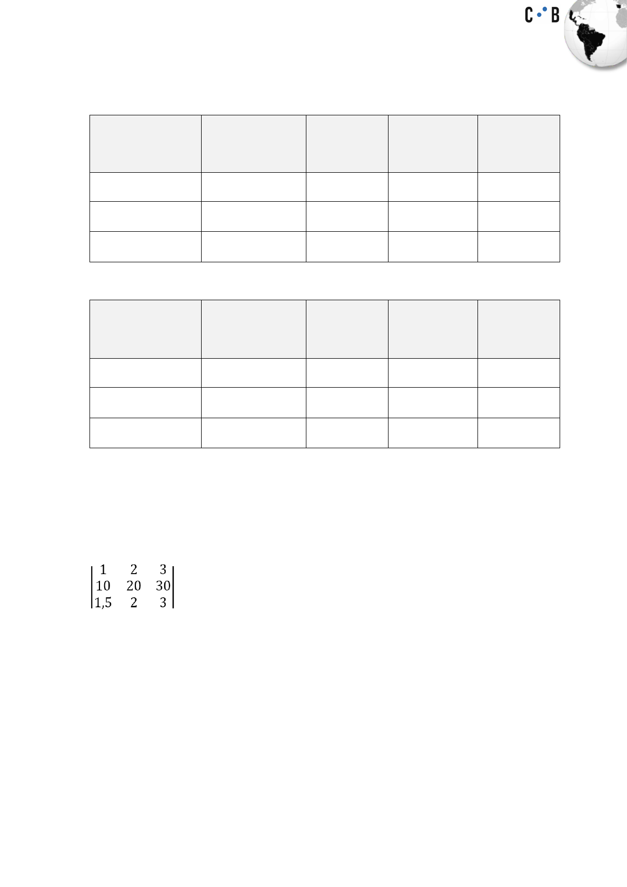
Publicaciones técnicas del Consejo Iberoamericano del Braille
29
Estructura encerrada entre barras (determinante):
Fila
Signo braille
de apertura
(izquierda)
Puntos
braille
Signo braille
de cierre
(derecha)
Puntos
braille
Primera fila
%
0-456-0d
%
456-0
Filas intermedias
%
0-456-0d
%
456-0
Última fila
%
0-456-0d
%
456-0
Cualquier otra estructura (tablas en general):
Fila
Signo braille
de apertura
(izquierda)
Puntos
braille
Signo braille
de cierre
(derecha)
Puntos
braille
Primera fila
p
0-1234
¥
1456-0
Filas intermedias
l
0-123
%
456-0
Última fila
v
0-1236
#
3456-0
Nótese que los cierres formados por los puntos 456 requieren que se deje un espacio
en blanco a continuación y no un semicajetín en blanco, como en la norma general.
En caso de coincidir con el final de renglón, no será necesario dejar el espacio en
blanco.
Ejemplo cuando la estructura tiene como delimitadores las barras verticales:
#l#c[#c%¥
% #A #b #c
%
% #Aj #b
j #cj%
% #A,e #b #c %
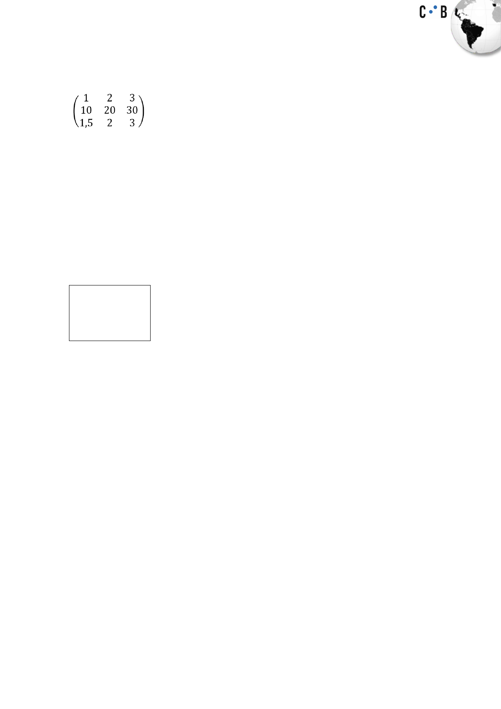
Publicaciones técnicas del Consejo Iberoamericano del Braille
30
Ejemplo cuando la estructura tiene como delimitadores paréntesis:
#s#c[#cݥ
s#A #b
#c Ý
l#Aj
#bj #cj%
(#A,e #b #c )
Ejemplo cuando la estructura tiene como delimitadores cualquier otra estructura (en
este caso la estructura está recuadrada):
1 2 3
10 20 30
1,5 2 3
#v#c[#c#¥
p#A #b
#c
¥
l#Aj
#bj #cj%
v#A,e #b #c #
En los sucesivos ejemplos se utilizarán como delimitadores los paréntesis ordinarios,
que, normalmente, son utilizados para la representación de matrices.
En caso de que la matriz tenga una sola fila, esta se escribirá como si fuera la última.
Ejemplo:
#s#A[#cݥ
(#A #b #c
)
a) Estructuras bidimensionales con cabeceras y pies en las filas y/o columnas. Las
cabeceras y pies de columnas se escribirán en líneas independientes, no abarcadas
por los delimitadores de la estructura (paréntesis, barras, corchetes, etc.).
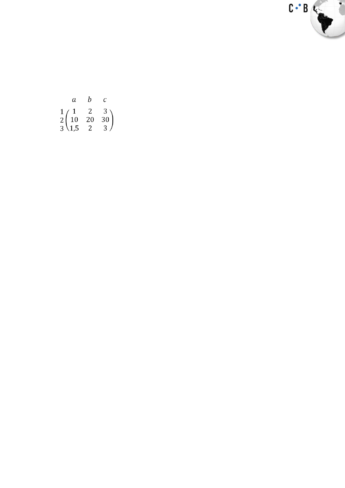
Publicaciones técnicas del Consejo Iberoamericano del Braille
31
Las cabeceras y pies de filas se escribirán fuera de los delimitadores de la
estructura y contiguos a ellos.
Ejemplo: matriz de 3×3 de los ejemplos anteriores, con cabeceras de columna a, b,
c y cabeceras de fila 1, 2 y 3.
#s#c[#cݥ
A b c
#A s #A #b
#cÝ
#b l#Aj #bj
#cj%
#c ( #A,e #b
#c)
b) Encolumnación. Los elementos de cada columna se escribirán encolumnados de
acuerdo con el criterio más conveniente según la naturaleza de dichos elementos:
respecto de la cifra de las unidades, respecto del signo de número, etc.
Ejemplo: Triángulo de Tartaglia.
1 1
1 2 1
1
3
3 1
1
4
6
4 1
1 5
10
5 1
#s#e[#AAÝ¥
s #A #A Ý
l #A #b #A %
l #A #c #c
#
A %
l #A #d #f
#d #
A %
(#A #e #Aj #Aj #e
#
A)
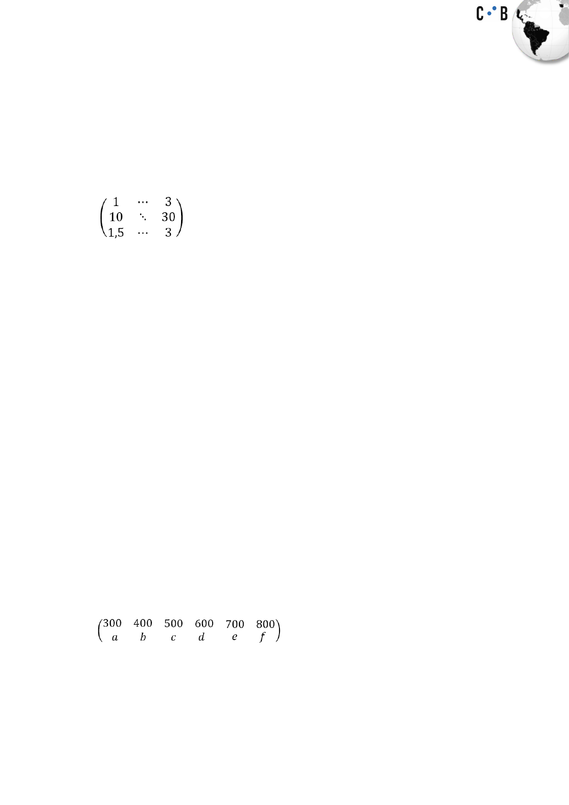
Publicaciones técnicas del Consejo Iberoamericano del Braille
32
c) Separación entre columnas. Se respetará al menos una columna de un espacio en
blanco entre todos los elementos de columnas contiguas.
d) Puntos suspensivos. De aparecer en la estructura puntos suspensivos para indicar
número indefinido de elementos u otro pormenor, se representarán en braille
mediante el signo
...
(3-3-3), independientemente de la dirección
representada (horizontal, vertical u oblicua en cualquier sentido).
#s#c[#cݥ
s#A .
.. #cÝ
l#Aj
...
#cj%
(#A,e ... #c)
e) Escritura de filas que exceden la longitud de la línea braille. Si la representación
de los elementos de una fila de la estructura bidimensional excede la longitud de
la línea braille:
• Tras la expresión indicativa de la estructura y la fila de cabeceras de
columna, en su caso, se escribirán en primer lugar las cabeceras de fila —si
las hubiere—, el signo delimitador de apertura y las columnas completas de
la estructura que no superen la longitud de la línea braille, con las
correspondientes cabeceras o pies de columna si los hubiere.
• Se respetará una línea en blanco.
• Se escribirán las re
stantes columnas de la estructura, con las
correspondientes cabeceras o pies de columna —si los hubiere—, el signo
delimitador de cierre y los pies de fila, en su caso.
Ejemplo:
Publicaciones técnicas del Consejo Iberoamericano del Braille
33
#s#b[#fݥ
s#cjj #djj
#ejj #fjj
( A b c d
#gjj #hjjÝ
e f )
Si el número de filas de la estructura excede el número de líneas de la página
braille, se escribirán en primer lugar las cabeceras y filas iniciales de la estructura -
si fuera preciso, desdobladas en dos o más páginas-, incluyendo en la última línea
de la página braille los pies de columna –si existieran-, y se continuaría la escritura
de las siguientes filas, repitiendo las cabeceras de columna, si existieran.
f) Estructuras sucesivas en horizontal. Si la longitud de la línea braille lo permite,
pueden escribirse varias estructuras completas relacionadas entre sí. El signo
indicativo de cada una de las estructuras se escribirá en el renglón superior
encolumnado con el signo de apertura de la estructura.
#s#c[#cݥ #s#c[#cݥ
sA b cÝ sA b cÝ
ld e
f% ld e f%
(g h i) (g h i)
3.3.2. Representación braille semilinealizada
En ella se intenta conservar la bidimensionalidad y una cierta correspondencia en
columna de los elementos, permitiendo diferenciar la posición en cada línea y las
cabeceras/pies de filas y columnas. Se dispensa del recuento de espacios exigido por
una correspondencia estricta en columna, lo que permite tomar apuntes o realizar
operaciones de forma rápida.
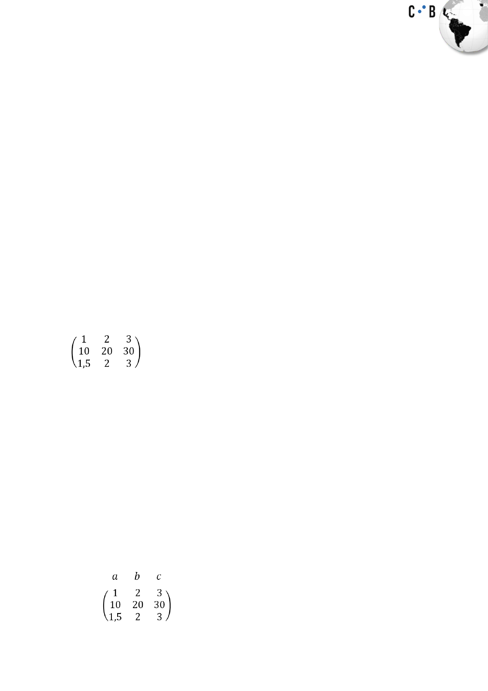
Publicaciones técnicas del Consejo Iberoamericano del Braille
34
Se seguirá la siguiente secuencia:
1.º) Línea en blanco.
2.º) El «indicativo de estructura», que se forma con el signo de estructura, el
número de filas, el signo de multiplicar, el número de columnas, el signo de
cierre y el título o nombre, en su caso.
3.º) La primera fila se inicia con el signo indicador de estructura.
4.º) Cada elemento se separa por el signo «separador de columna»
.
(0-3).
En caso de no figurar un elemento no se pondrá nada en su lugar.
5.º) Cada fila, a partir de la segunda, se escribe en línea distinta, iniciada por el
signo «separador de fila»
;
(0-23).
6.º) La última fila concluye con el signo de «cierre de la estructura», simétrico
del de «inicio» por simetría vertical.
7.º) Línea en blanco.
El indicador y todas las filas de la estructura semilinealizada deberán estar en la
misma página braille.
Ejemplo:
#s#c[#cݥ
#s#A .#b .#c
;#Aj .#b
j .#cj
;#A,e .#b .#cݥ
a) Cabeceras de columna. En caso de existir, se escribirán como una primera
línea del interior de la matriz, iniciándose con el signo indicador de estructura
y, a continuación, el signo
;
(23), separadas por signos «separador de
columna»
.
(0-3). Las filas se representarán como en el ejemplo anterior,
donde no había cabeceras de columnas.
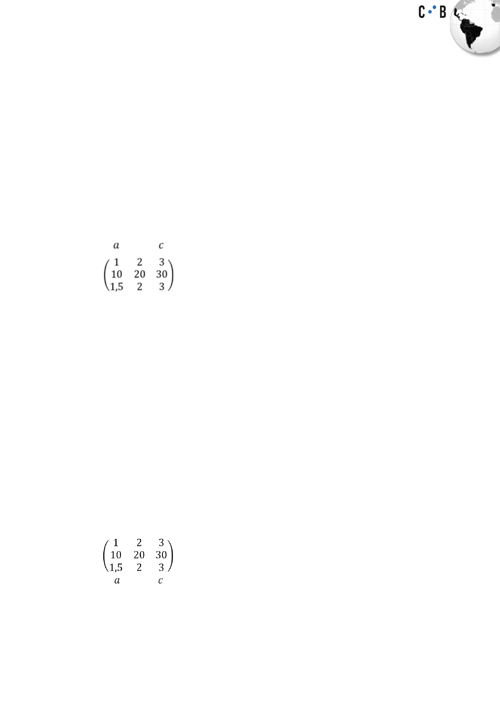
Publicaciones técnicas del Consejo Iberoamericano del Braille
35
#s#c[#cݥ
#s;A .b .c
;#A .#b .#c
;#Aj .#bj .#cj
;#A,e .
#b .#cݥ
En caso de no existir cabecera en alguna de las columnas, no se pondrá nada
en su lugar.
#s#c[#cݥ
#s;A .
.c
;#A .#b .#c
;#Aj .#bj .#cj
;#A,e .
#b .#cݥ
b) Pies de columna. En caso de existir, se escribirán en una línea adicional que
comenzará con
;;
(0-23-23). Cada uno de los pies, a partir del segundo,
irá precedido por el signo de «separador de columna»
.
(0-3).
En caso de no existir pie en alguna de las columnas, no se pondrá nada en su
lugar. Esta línea adicional con los «pies de columna» se cerrará con el signo de
cierre de la estructura, manteniendo el 0-3 como separador de columna.
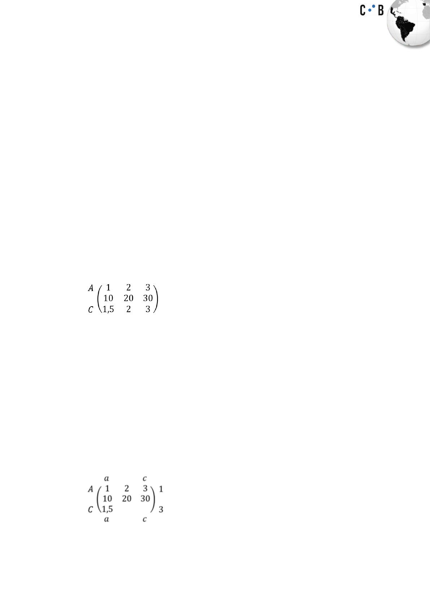
Publicaciones técnicas del Consejo Iberoamericano del Braille
36
#s#c[#cݥ
#s#A .#b .#c
;#Aj .#b
j .#cj
;#A,e .#b .#c
;;A .
.cݥ
c) Cabeceras de fila. En caso de existir, se escribirán al comienzo de la fila, tras el
«signo separador de fila», precedidas por el signo distintivo
@
(5-0) y
seguidas de un signo separador de columna
.
(0-3). De este modo se
consigue una mayor encolumnización. Este par de signos,
@
(5-0), se
escribirá en todas las filas aunque no figure cabecera en esa fila. En caso de
que no figure cabecera en una determinada fila, dado que un indicador de
cabecera de fila estará seguido de un separador de columna, se suprimirá uno
de los dos espacios consecutivos que se generan.
#s#c[#cݥ
#s@ {a .
#
A .#b .#c
;@ .#Aj .#bj
.#cj
;@ {c .#A,e .#b
.#cݥ
d) Pies de fila. De existir alguna fila con «pie», este se escribirá al final de la
misma después del signo indicador
@
(5-0). Si en alguna fila no existiera
«pie», deberá escribirse el signo
@
(punto 5) como último carácter de la línea.
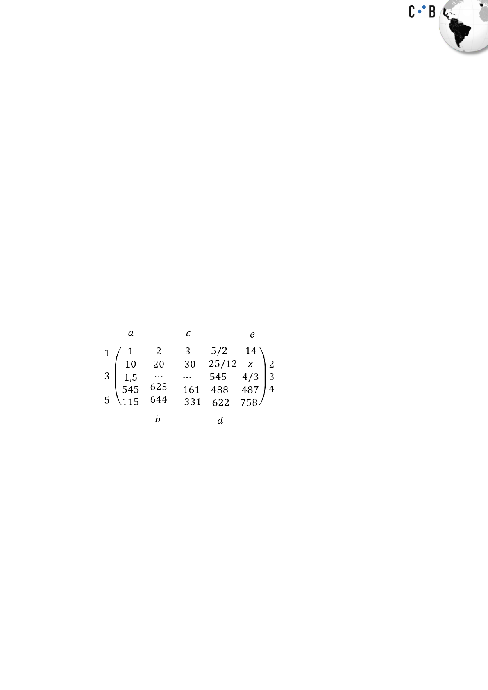
Publicaciones técnicas del Consejo Iberoamericano del Braille
37
#s#c[#cݥ
#s;A . .c
;@ {a .
#
A .#b .#c@
#
A
;@ .#Aj .#bj .#cj@
;@ {c .#A,e
. .@ #c
;;A .
.cݥ
e) Escritura de filas que exceden la longitud de la línea braille. Si la
representación braille de una fila supera la longitud de la línea braille, esta se
concluye con el signo «separador de columna»
.
(0-3) y se continúa en la
siguiente, respetando una sangría de dos espacios en blanco seguida del punto
3. Es decir, la continuación del renglón en la línea siguiente comenzaría con
.
(0-0-3).
Ejemplo:
#s#e[#eݥ
#s;A .
.c . .e
;@ #A .#A .#b .#c .#e; .#Ad@
;@ .#Aj .#bj .#cj .#be,; .
.z@ #b
;@ #c .#A,e ....
.... .#ede .
.#d:
@ #c
;@ .#ede .#fbc .#AfA .#dhh .
.#dhg@ #d

Publicaciones técnicas del Consejo Iberoamericano del Braille
38
;@ #e .#AAe .#fdd .#ccA .#fbb .
.#geh@
;; .b .
.d .Ý
¥
3.4. Delimitación de regiones en el seno de una estructura
bidimensional
La diferenciación gráfica de regiones o grupos de elementos dentro de una estructura
bidimensional se hace con distintos recursos gráficos: diferenciaciones de color de
texto o fondo, encerramiento o enlazamiento por líneas, delimitadores en vertical o
en horizontal…
No obstante, todos estos recursos parecen tener como única función determinar la
región, no existiendo significado matemático específico en el recurso gráfico
empleado. El significado de la región o el propósito del señalamiento lo establece el
contexto.
Existe, sin embargo, una excepción: los tensores, que suelen representarse como
«matrices de matrices». En cuyo caso, los paréntesis interiores a la matriz general
tienen significado específico.
En braille, cualquiera de estas formas se representará mediante los signos y aplicando
las reglas que se recogen a continuación en los apartados 3.4.1 para la
representación bidimensional explícita, y 3.4.2 para la forma semilinealizada.
Los elementos no señalizados por el mismo tipo de signos braille pueden
considerarse como una región diferenciada, aunque no precisen ser señalizados.
3.4.1. Regiones en estructuras bidimensionales representadas
en braille en forma explícita
Precediendo a la representación de la estructura (y formando parte de ella), se
incluye una «Nota de transcripción» indicando el valor gráfico de la diferenciación
braille, o de cada una de ellas, de existir varias.
La delimitación de regiones se realiza encerrando dichas regiones en «cajas» o
«cuadros» formados por signos braille consecutivos en horizontal y en vertical. En las
explicaciones que vienen a continuación las llamaremos «cajas».
Para formar estas cajas se consideran dos colecciones de signos braille, con
significado independiente.

Publicaciones técnicas del Consejo Iberoamericano del Braille
39
Primaria o preferente
}:::¿ 0-35-25-25-25-26-0
l % 0-123-… -456-0
l % 0-123-… -456-0
e:::i 0-15-25-25-25-24-0
Secundaria
},,,¿ 0-35-2-2-2-26-0
K { 0-13-… -46-0
K { 0-13-… -46-0
e,,,i 0-15-2-2-2-24-0
Los valores «0» de celdas en blanco que preceden a los signos iniciales, o de la
izquierda, y que siguen a los finales, o de la derecha, forman parte de espacios de
separación de columnas.
Para el encerramiento de los elementos diferenciados tipográficamente en braille se
tendrán en cuenta las siguientes cuestiones:
a) Se incrementarán los espacios necesarios para que se mantenga la
encolumnación de elementos.
b) Los bordes horizontales (superior e inferior) se sitúan en líneas independientes
y no podrán contener elementos de la estructura.
c) Se omite la representación de los bordes verticales de la caja si coinciden con
los delimitadores globales de la estructura (paréntesis, barras, corchetes, etc.).
d) Si en una m
isma estructura se dan varias regiones con la misma diferenciación
gráfica pero separadas unas de otras, en braille se utilizará una sola familia de
signos.
e) Los elementos no encerrados en una caja pueden considerarse como una
región diferenciada, aunque no precisen ser encerrados en caja distinta.
f) Para los lugares de intersección, en su caso, de regiones diferenciadas por las
dos familias de signos braille, se emplearían signos resultantes de la
superposición de ambas direcciones o tipos:
r
(1235) o
w
(2456).
g) No obstante, si coincidieran bordes horizontales de ambas diferenciaciones
braille, se situarán en líneas independientes.
h) Cuando la región a resaltar está formada por un elemento aislado:
• Si la diferenciación gráfica se realiza mediante signos de la primera familia,
se les antepone el signo
¾}
(puntos 4-35).
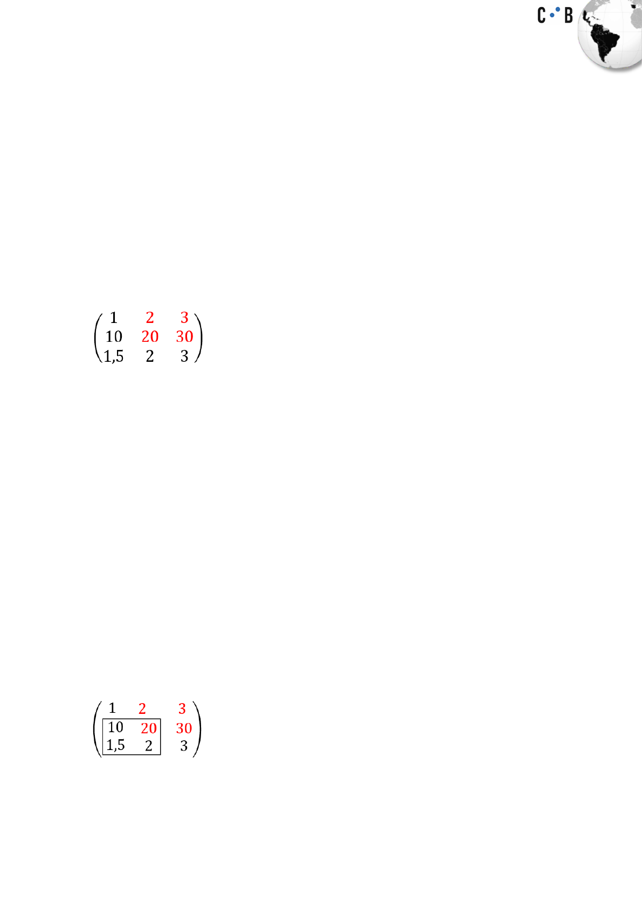
Publicaciones técnicas del Consejo Iberoamericano del Braille
40
• Si corresponde a la segunda diferenciación gráfica,
^}
(45-35).
i) De coincid
ir en un mismo elemento las dos diferenciaciones, se antepondrá el
signo
^¾}
(puntos 45-4-35).
j) Cuando
la diferenciación gráfica consista en el enlazamiento por una línea
oblicua (v. gr., en diagonal), cada uno de los elementos se considerará como
«elemento aislado», aplicándole lo indicado más arriba.
En los ejemplos que vienen a continuación se ilustran algunos de estos pormenores.
Si fuera preciso resaltar el menor complementario al elemento a
31
(el representado
en rojo en el original):
En
br
aille se representaría así:
#s#c[#cݥ
}:::::::¿
s #A l #b #c Ý
l #Aj l#bj #cj
%
l e::::::::w
( #A,e #b #c
)
Si además fuera preciso señalar el menor simétrico a
31
(región constituida por los
elementos 10, 20, 1,5 y 2, recuadrada en el original):
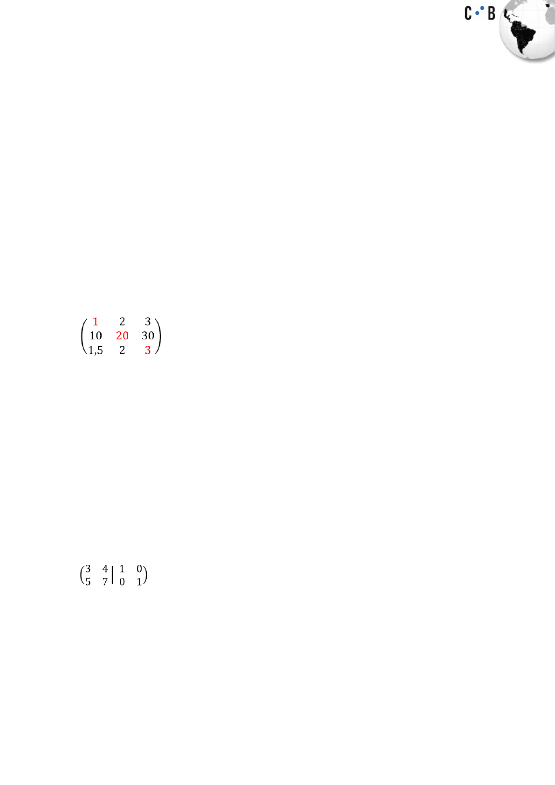
Publicaciones técnicas del Consejo Iberoamericano del Braille
41
#s#c[#cݥ
}::::::::¿
s #A l #b
#c Ý
r,,,,,,,r,,,¿ %
l #Aj l#bj{
#cj %
l e:::w:::::w
l #A,e #b
{ #c )
e,,,,,,,,,,,i
En el siguiente ejemplo, los elementos 1, 20 y 3, que forman una de las diagonales,
tienen una tipografía distinta:
En b
raille su representación será:
#s#c[#cݥ
s@}#A #b
#c Ý
l #Aj @}#bj
#cj%
( #A,e
#b
@}#c
)
En el siguiente ejemplo, el recurso gráfico utilizado para diferenciar regiones es un
delimitador vertical, cuya representación no hace necesaria la utilización de los signos
de variante tipográfica.
En braille, su representación será:
#s#b[#dݥ
s #c #d
l #
A #jÝ
( #e #g
l #j #
A)
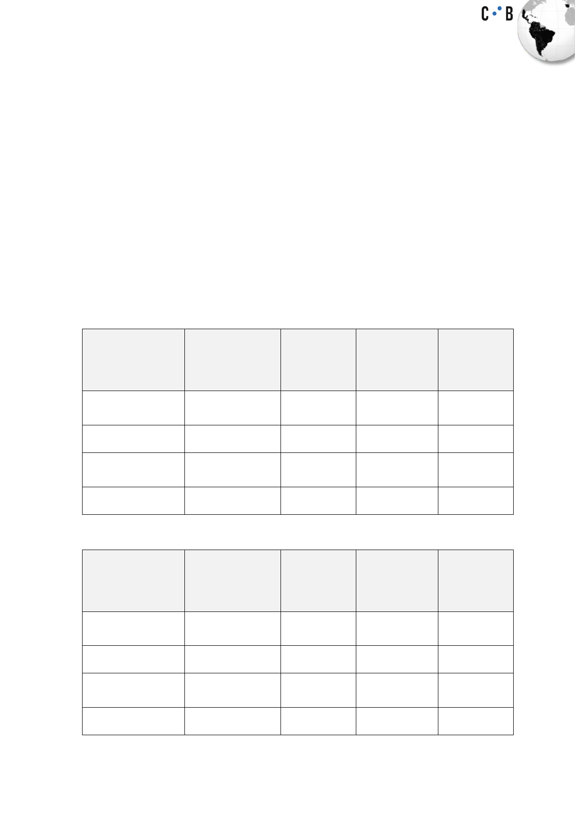
Publicaciones técnicas del Consejo Iberoamericano del Braille
42
3.4.2. Regiones en estructuras bidimensionales representadas en braille
en forma semilinealizada
Si esta representación no está precedida de la bidimensional explícita, deberá ir
precedida de una nota de transcripción que describa la correspondencia, indicando
qué recurso tipográfico del original se representa con los signos braille para indicar
las distintas diferenciaciones que se presentan más abajo.
En la representación semilinealizada, la delimitación de regiones (o grupos de
elementos) se realiza fila a fila, mediante signos braille de marcado del primer elemento
perteneciente a la región y del último, en su caso. El primero irá precedido de un signo
distintivo y el último irá seguido del correspondiente signo distintivo. Se distinguirán las
distintas filas diferenciadas gráficamente: primera fila, filas intermedias y última fila.
Se consideran dos colecciones de signos braille, con significado independiente.
Diferenciación preferente
Fila
Signo braille
de inicio
(izquierda)
Puntos
braille
Signo braille
de cierre
(derecha), en
su caso
Puntos
braille
Primera fila
(borde superior)
¾¿
0-4-26
¾}
4-35-0
Filas intermedias
@¿
0-5-26
@}
5-35-0
Última fila
(borde inferior)
_¿
0-6-26
_}
6-35-0
Única fila
¾¿
0-4-26
_}
6-35-0
Diferenciación secundaria
Fila
Signo braille
de inicio
(izquierda)
Puntos
braille
Signo braille
de cierre
(derecha), en
su caso
Puntos
braille
Primera fila
(borde superior)
^¿
0-45-26
^}
45-35-0
Filas intermedias
{?
0-46-26
{}
46-35-0
Última fila
(borde inferior)
»¿
0-56-26
»}
56-35-0
Única fila
^¿
0-45-26
»}
56-35-0
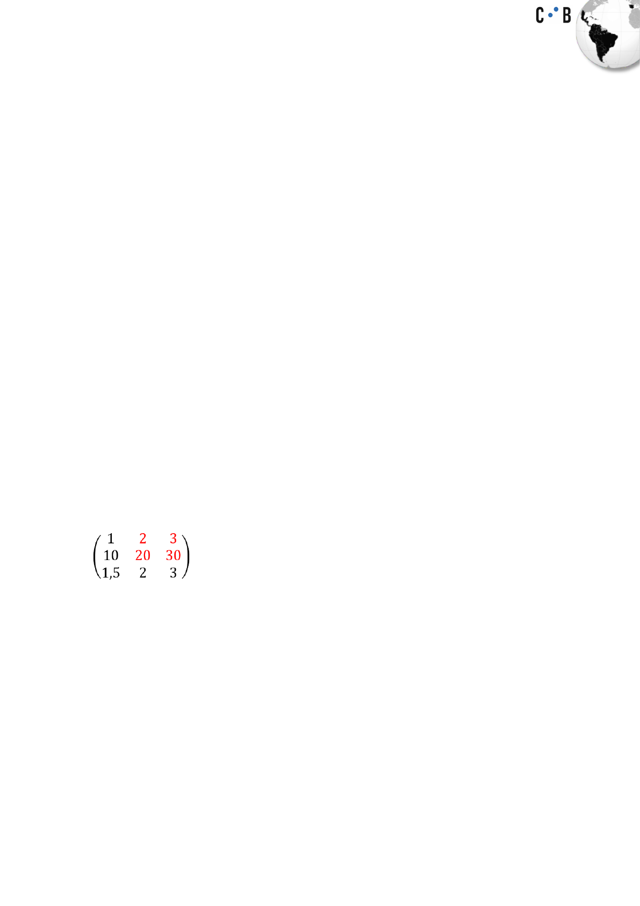
Publicaciones técnicas del Consejo Iberoamericano del Braille
43
En su transcripción a braille, se tendrán en cuenta las siguientes cuestiones:
a) Los signos braille de diferenciación de regiones, tanto de apertura como de
cierre, en su caso, tienen valor de signos separadores de columna, por lo que
estos se omiten.
b) Se omiten los signos de cierre si la diferenciación se extiende hasta el final de
la fila, salvo en el caso de «fila única» o que existieran «pies de fila».
c) De existir en una misma estructura varias regiones con la misma diferenciación
gráfica, se empleará en braille la misma familia de signos.
d) Cuando la región a resaltar está formada por un elemento aislado:
• Si la diferenciación gráfica se realiza mediante diferenciación primaria, se le
antepone el signo
¾}
(4-35).
• Si se realiza mediante diferenciación secundaria, se le antepone el signo
^}
(45-35).
• De coincidir en un mismo elemento las dos diferenciaciones, se antepondrá
el signo
^¾}
(45-4-35).
e) Cuando la diferenciación gráfica consista en el enlazamiento o marcado en
sentido vertical u oblicuo (v. gr., en diagonal), cada uno de los elementos se
considerará como «elemento aislado», aplicándole lo indicado más arriba.
En los ejemplos qu
e vienen a continuación se ilustran algunos de estos pormenores.
En la siguiente matriz es preciso resaltar el menor complementario al elemento a
31
(el representado en rojo en el original):
En br
aille, se representará:
#s#c[#cݥ
#s#A¾¿#b .#c
;#Aj¾¿#bj .#cj
;#A,e .#b.#cݥ
Si además fuera preciso señalar el menor simétrico a
31
(región constituida por los
elementos 10, 20, 1,5 y 2, recuadrada en el original):
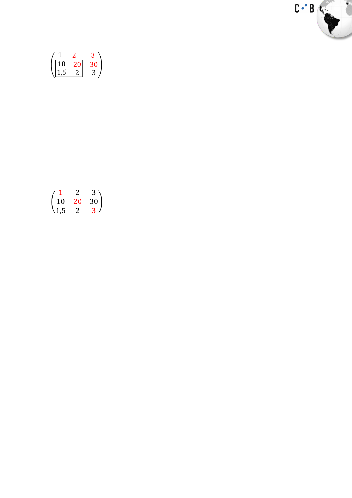
Publicaciones técnicas del Consejo Iberoamericano del Braille
44
#s#c[#cݥ
#s#A¾¿#b .#c
;^¿#Aj¾¿#bj»}#cj
;^¿#A,e .#b»}#cÝ¥
En el siguiente ejemplo, los elementos 1, 20 y 3, que forman una de las diagonales,
tienen una tipografía distinta:
En br
aille, su representación será:
#s#c[#cݥ
#s¾}#A .#b .#c
;#Aj¾}#bj
.#cj
;#A,e .#b¾}#cÝ¥
Capítulo 4. Índices y marcas
4.1. Posiciones
En caracteres visuales, un signo puede estar afectado por letras, números,
expresiones, marcas, etc., en alguna de las posiciones que figuran en el gráfico
siguiente:
2 4 6
Z
1 3 5
Posición 1: subíndice a la izquierda.
Posición 2: superíndice a la izquierda.
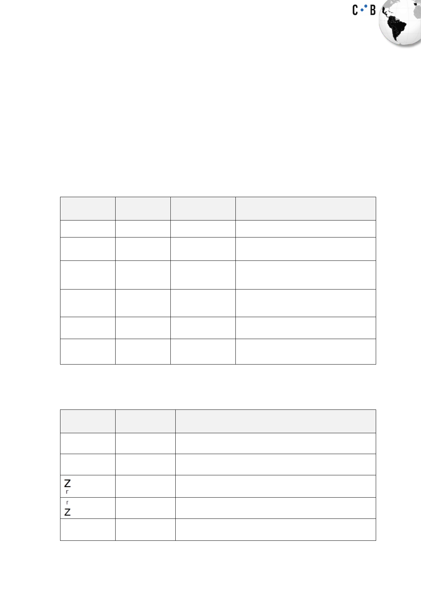
Publicaciones técnicas del Consejo Iberoamericano del Braille
45
Posición 3: suscrito.
Posición 4: superescrito.
Posición 5: subíndice a la derecha.
Posición 6: superíndice a la derecha.
4.2. Índices
4.2.1. Caso general
Para indicar la posición en que se encuentra el índice, se utilizan los siguientes signos
braille escritos a continuación del signo base al que afectan:
Signo visual Signo braille Puntos braille Significado
_Í
6-34 subíndice a la izquierda
¾§
4-16 superíndice a la izquierda
ÍÍ
34-34 índice en suscrito
§§
16-16 índice en superescrito
Í
34 subíndice a la derecha (sub)
§
16 superíndice a la derecha (super)
Las dos últimas posiciones son las que aparecen con mayor frecuencia.
Ejemplos (en ellos se utiliza la «z» como letra base y la «r» como índice):
Signo visual Signo braille Significado
r
z
z_Ír
z minúscula con «r» en subíndice a la izquierda
r
z
z¾§r
z minúscula con «r» en superíndice a la izquierda
zÍÍr
z minúscula con «r» suscrita
z§§r
z minúscula con «r» superescrita
z
r
zÍr
z con subíndice «r»
Publicaciones técnicas del Consejo Iberoamericano del Braille
46
Signo visual Signo braille Significado
z
r
z§r
z con superíndice «r»
Si el índice estuviera formado por varios términos o por una expresión matemática,
se encerrará entre paréntesis auxiliares.
Ejemplos (para la escritura de números, ver capítulo 2. Cifras y números, y para la
escritura de los paréntesis auxiliares ver capítulo 3. Delimitadores):
Signo visual Signo braille Significado
z
n-1
zͿn-#A}
z con subíndice «n-1»
z
i,j
z§¿i ,j}
z con superíndice «i,j»
z
i
r
-1
zÍ¿iÍr-#A}
z con subíndice la diferencia entre «i»
sub «r» y 1
z
i
r-1
zÍiÍ¿r-#A}
z con subíndice «i» afectado por
subíndice «r-1»
n-1
z
z¾§¿n-#A}
z con superíndice a la izquierda «n-1»
z
-1/2
z§-#A;
z con superíndice a la derecha -1/2
Análogamente para cualquier posición.
En algunos casos no son necesarios los paréntesis auxiliares, aunque su uso tampoco
variaría su significado. Véase el siguiente ejemplo:
Signo visual Signo braille Significado
z
i
o
zÍiÍ#j
z con subíndice «i sub 0»
z
i
o
zÍ¿iÍ#j}
z con subíndice «i sub 0»
4.2.2. Subíndices numéricos
En la representación de estructuras bidimensionales (ver capítulo 3) cuyos elementos
tengan subíndices numéricos, estos se representarán en forma abreviada utilizando
los elementos braille de la quinta serie (números en posición baja) sin indicador de
posición ni signo numérico.
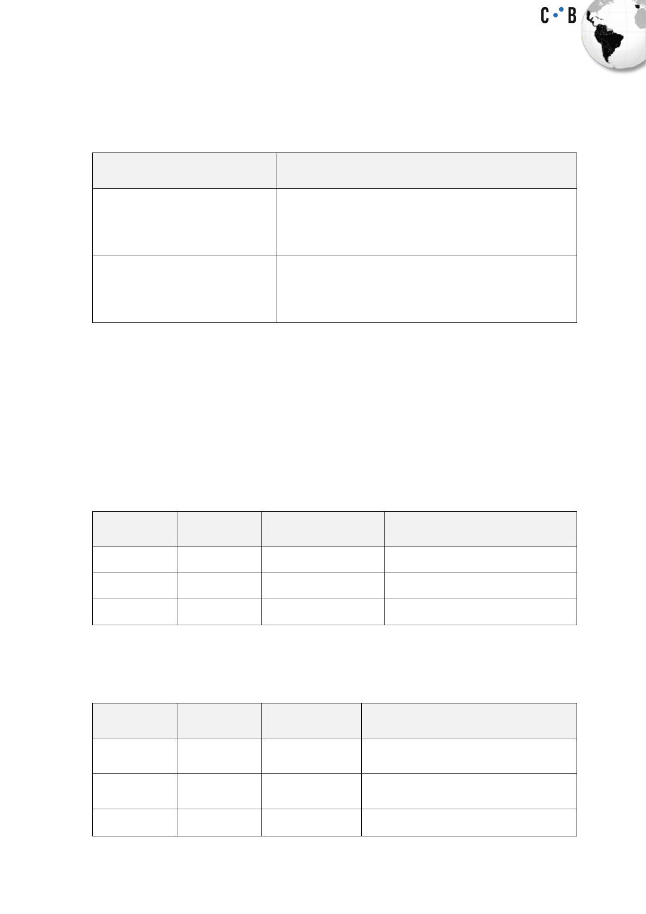
Publicaciones técnicas del Consejo Iberoamericano del Braille
47
En el caso de que el subíndice esté compuesto por dos números de una cifra
separados por una coma, esta se podrá omitir en caso de que no exista riesgo de
confusión.
Signo visual Signo braille
a
11
a
12
a
21
a
22
A,, A,;
A;, A;;
a
1,1
a
1,2
a
2,1
a
2,2
A,, A,;
A;, A;;
4.3. Marcas
4.3.1. Marcas en superíndice a la derecha
Ciertas marcas que son de uso frecuente tienen una representación especial en
braille.
Las marcas «prima», «segunda» y «tercera» en caracteres visuales se representan
por uno, dos o tres acentos agudos respectivamente en posición de superíndice. En
braille, cada uno de estos signos se escribe:
Signo visual Signo braille Puntos braille Significado
ü
1256 prima
üü
1256-1256 segunda
üüü
1256-1256-1256 tercera
Otras marcas en esta posición de superíndice a la derecha se escriben a continuación
del signo base utilizando su signo específico seguido del punto 3. Los principales
signos que se utilizan como marcas en el contexto matemático son:
Signo visual Signo braille Puntos braille Significado
+
+.
235-3
marca de signo positivo
en superíndice
-
-.
36-3
marca de signo negativo
en superíndice
°
].
356-3 marca de círculo en superíndice
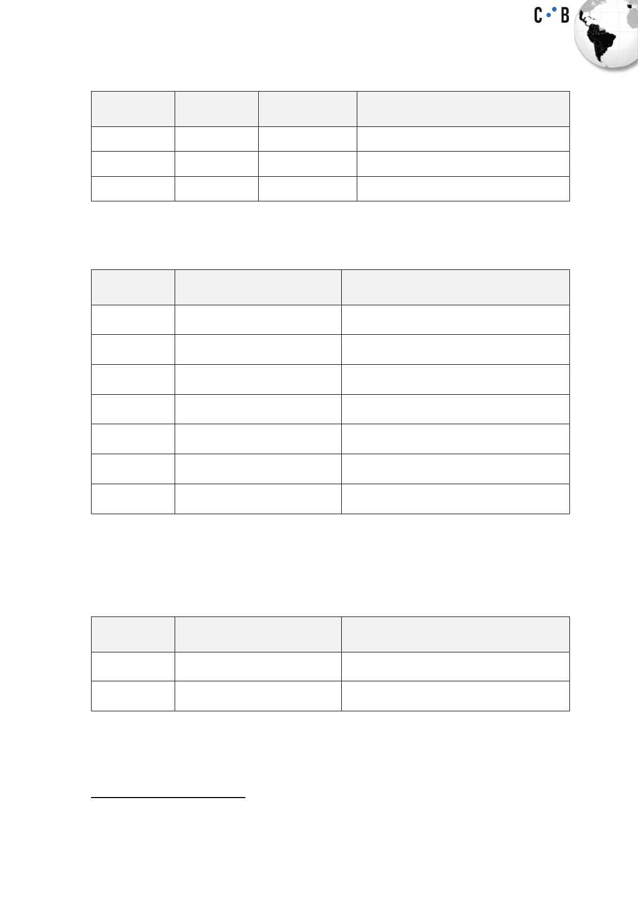
Publicaciones técnicas del Consejo Iberoamericano del Braille
48
Signo visual Signo braille Puntos braille Significado
¢
*
*.
256-3 marca de asterisco en superíndice
‵
¿.
26-3 marca de acento grave
’
ü.
1256-3 marca de apóstrofo
Cuando haya más de una marca, repetida o distinta, el punto 3 se escribirá solo al final.
A continuación, se dan ejemplos de su escritura, utilizando la letra «z» como base:
Signo visual Signo braille Significado
z
+
z+.
z con un signo positivo
z
-
z-.
z con un signo negativo
z°
z].
z con círculo
8
z
*
z*.
z con asterisco
z
+++
z+++.
z con tres signos positivos
z``
z¿¿.
z con dos acentos graves
z
*-
z*-.
z con asterisco y menos
En el caso particular de tratarse de alguna de las marcas especiales repetida 4 o más
veces, se representará en braille con el signo de superíndice seguido del número, la
marca correspondiente y un último carácter con el punto 3.
Ejemplo:
Signo visual Signo braille Significado
z
4*
z§#d*.
z con cuatro asteriscos
z
****
z§#d*.
z con cuatro asteriscos
Cualquier otra marca no reflejada en la tabla anterior se representará después de la
letra base, precedida del signo braille indicativo de posición en superíndice a la
derecha, finalizando con el punto 3.
8
Cuando ° es utilizado para indicar grados no va seguido del punto (v. 11.5. Medidas de ángulos).
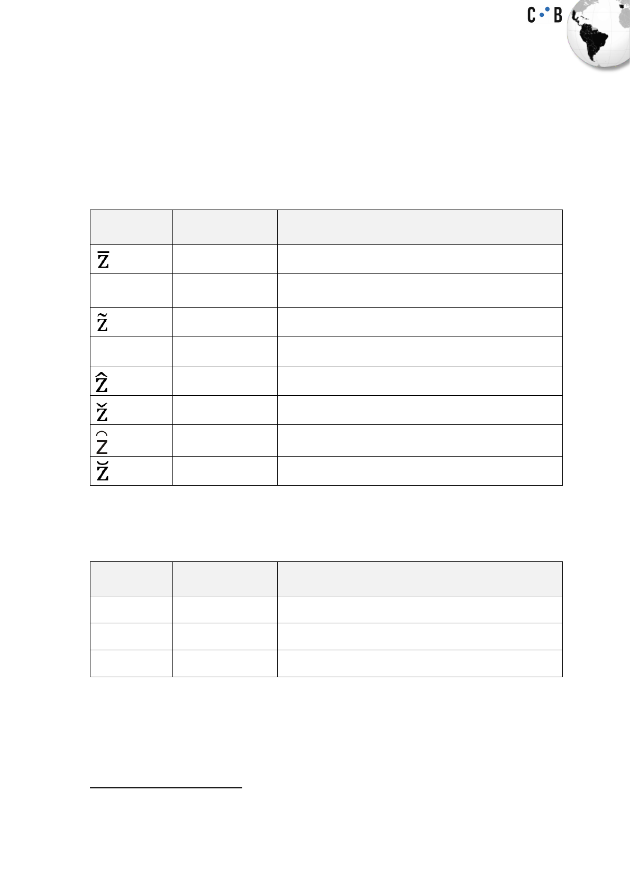
Publicaciones técnicas del Consejo Iberoamericano del Braille
49
z
∞
z§#ü. z con signo de infinito en superíndice a la derecha
9
4.3.2. Marcas en superescrito
Ciertas marcas en superescrito en braille tienen una representación especial. Se
escriben antes de la letra base («z» o «Z» en los ejemplos).
Signo visual Signo braille Significado
¾cz
zeta minúscula superrayada
¾c¾c{z
zeta mayúscula con dos trazos horizontales
en superescrito
@¿z
línea ondulada sobre zeta minúscula
¾]z
círculo sobre zeta minúscula
»:z
circunflejo sobre zeta minúscula
»-z
circunflejo inverso sobre zeta minúscula
¾:z
arco sobre zeta mayúscula
_:z
arco inverso sobre zeta
En el caso particular de las letras marcadas con uno, dos o tres puntos en
superescrito, es necesario utilizar el prefijo alfabético correspondiente, incluso para
las letras latinas minúsculas, como se ve en los siguientes ejemplos:
Signo visual Signo braille Significado
¾{r
erre mayúscula con un punto
¾¾¾z
letra griega zeta minúscula con dos puntos
¾¾¾@r
erre minúscula con tres puntos
Si la marca afecta a una expresión compuesta, esta expresión se encerrará entre los
correspondientes paréntesis auxiliares.
9
Ver capítulo 7. Teoría de conjuntos para el signo de «infinito».
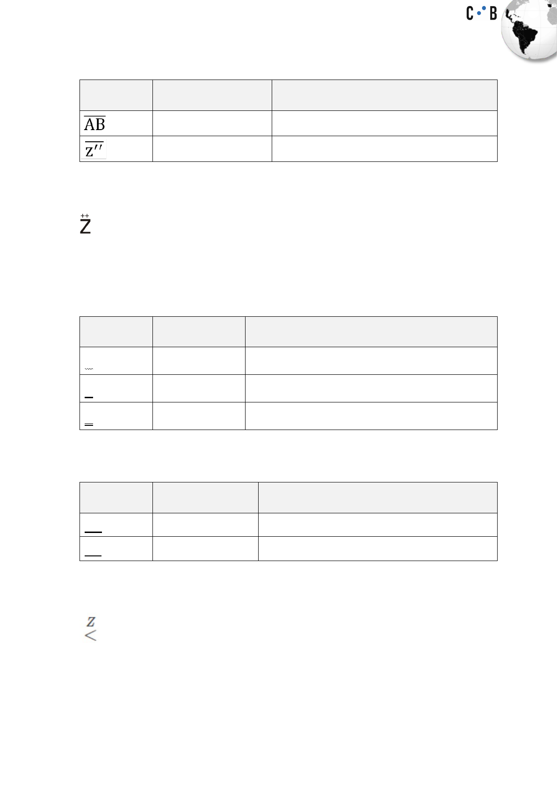
Publicaciones técnicas del Consejo Iberoamericano del Braille
50
Signo visual Signo braille Significado
¾c?{a{b}
raya sobre A y B
¾c¿züü}
zeta segunda superrayada
Cualquier otra marca no reflejada en los casos anteriores se representará después de
la letra base precedida de 16-16 y finalizando con el punto 3.
z××++. zeta con dos signos de suma en superescrito
4.3.3. Marcas en suscrito
Ciertas marcas en suscrito en braille tienen una representación especial. Se escriben
antes de la letra base.
Signo visual Signo braille Significado
z
_¿z
línea ondulada bajo zeta
z
_-z
z subrayada
z
_-_-z
z con subrayado doble
Si la marca afecta a una expresión compuesta, esta expresión se encerrará entre los
correspondientes paréntesis auxiliares.
Signo visual Signo braille Significado
ab
_-¿Ab}
a y b subrayadas
z´´
_-¿züü}
zeta segunda subrayada
Cualquier otra marca no reflejada en los casos anteriores se representará después de
la letra base, precedida de 34-34 y finalizando con el punto 3.
zÍÍö. zeta con signo de «menor que» en suscrito
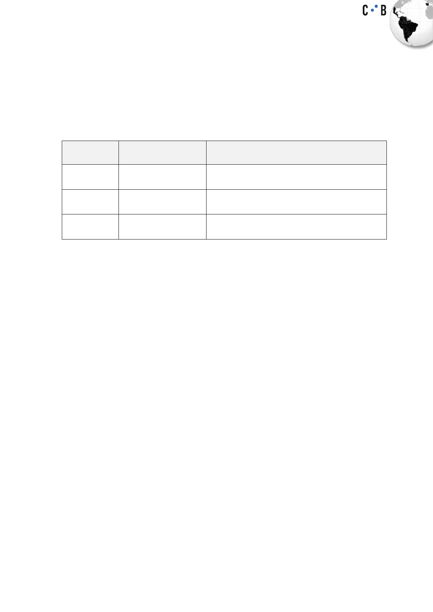
Publicaciones técnicas del Consejo Iberoamericano del Braille
51
4.3.4. Marcas en subíndice a la derecha o a la izquierda o superíndice
a la izquierda
Cuando cualquiera de las marcas recogidas en los apartados anteriores aparezca en
alguna de estas posiciones, se escribirán precedidas del indicador braille de posición
correspondiente a continuación de la letra base y seguidas del punto 3:
Signo visual Signo braille Significado
z
+
zí+.
z con signo positivo en subíndice a la
derecha
----
z
z¾§#d-.
z con cuatro signos negativos en posición
de superíndice a la izquierda
++
z’’
züü_í++.
z segunda con dos signos de más en posición
de subíndice a la izquierda
4.4. Símbolos afectados por varios índices y/o marcas
4.4.1. Orden de escritura
Cuando un símbolo o letra está afectado por varios índices y/o marcas, se ha de
seguir el siguiente orden:
1) Marcas en suscrito que no requieran signo braille de posición.
2) Marcas en superescrito que no requieran signo braille de posición.
3) Símbolo base.
4) Marca que no requiere indicador de posición en superíndice a la derecha.
5) Marcas y/o índices en subíndice a la izquierda.
6) Marcas y/o índices en superíndice a la izquierda.
7) Marcas y/o índices en suscrito.
8) Marcas y/o índices en superescrito.
9) Marcas y/o índices en posición de subíndice a la derecha.
10) Marcas y/o índices en posición de superíndice a la derecha.
Obsérvese que para la escritura de índices de letras y números que exijan signos de
posición se sigue el orden de escritura determinado en el apartado 4.1.
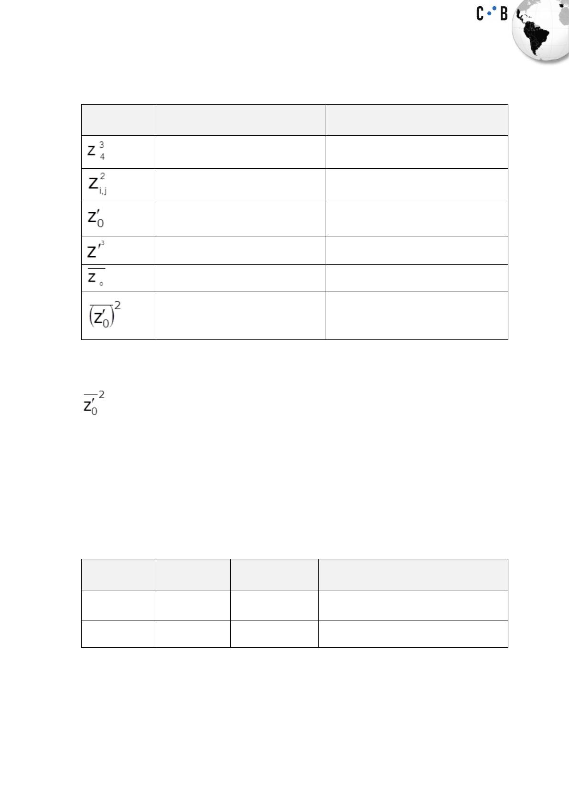
Publicaciones técnicas del Consejo Iberoamericano del Braille
52
Ejemplos:
Signo visual Signo braille Significado
zÍ#d§#c
z con subíndice «4» y superíndice
«3»
zÍ¿i ,j}§#b
z con subíndice «i,j» y superíndice
«2»
züÍ#j
z prima con subíndice «0»
zü§#c
z prima con superíndice «3»
¾c¿zÍ#j}
z con subíndice «0» superrayada
¾c(züÍ#j)§#b
z prima con subíndice «0»,
entre paréntesis, superrayada
y con superíndice «2»
Si en esta expresión no figuraran paréntesis, para su transcripción al braille se
utilizarán paréntesis auxiliares.
¾c¿züÍ#j}§#b z prima con subíndice «0», superrayada
y con
superíndice «2»
4.4.2. Índices desplazados
La escritura en braille de los índices desplazados se efectuará escribiendo, antes del
indicador de posición correspondiente, el signo
»
(56) para los subíndices y el signo
^
(45) para los superíndices.
Siemp
re se escribirá primero el índice que está más cercano al signo base.
Signo visual Signo braille Puntos braille Significado
^§
45-16 superíndices desplazados
»Í
56-34 subíndices desplazados
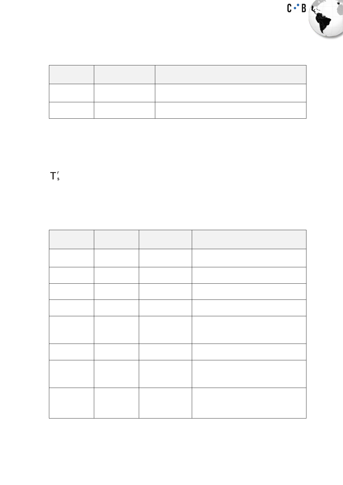
Publicaciones técnicas del Consejo Iberoamericano del Braille
53
En estos dos ejemplos la «s» está desplazada:
Signo visual Signo braille Significado
T
r
s
{tír^×s
T subíndice «r», superíndice desplazado «s»
T
r
s
{t×r»ís
T superíndice «r», subíndice desplazado «s»
Obsérvese en el caso anterior que, siguiendo la norma de la escritura de «índices
desplazados», se escribe primero el superíndice que afecta a la letra base, en lugar
del subíndice. De no estar desplazado el subíndice, el orden sería el inverso, como se
puede observar a continuación (ver apartado 4.3).
{tís§r
Capítulo 5. Operadores aritméticos y algebraicos
5.1. Operaciones aritméticas elementales
Signo visual Signo braille Puntos braille Significado
+
+
235 sumar
-
-
36 restar
x
[
236 multiplicar (aspa)
.
_
6-0d multiplicar (punto)
/
*
256
división con barra inclinada
(exclusivamente cuando indica
división)
___
*
256 división con trazo horizontal
: ÷ ·/·
@,
5-2
división con dos puntos
(en cualquiera de las variantes
en que aparezcan)
†,
».
56-3
operador genérico (suele utilizarse
para representar una operación
entre elementos de un conjunto)
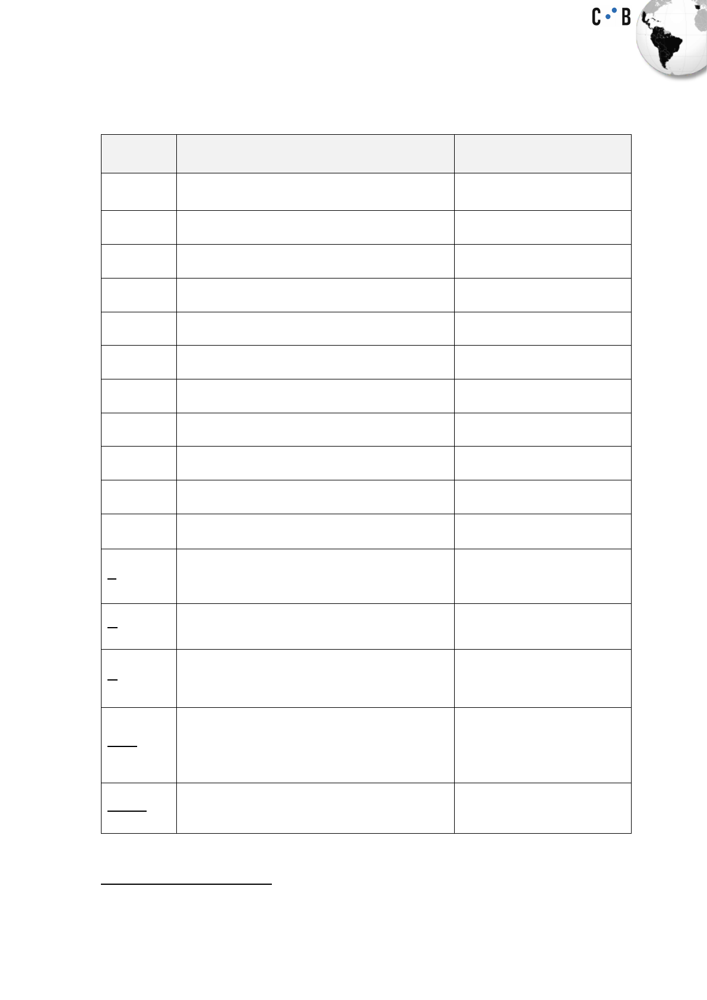
Publicaciones técnicas del Consejo Iberoamericano del Braille
54
Ejemplos:
Signo
visual
Signo braille Significado
6+2
#f+#b
seis más dos
6-2
#f-#b
seis menos dos
6x2
#f[#b
seis por dos
6·2
#f_ #b
seis por dos
6
2
#f».#b
seis operado con dos
3b
#c@b
tres b
3a+5x
#c@a+#eX
tres a más cinco x
a+b-c
a+b-c
a más b menos c
x·y
x_ y
x por y
x
y
x».y
x operado con y
3:4
#c@,#d
tres dividido cuatro
(con dos puntos)
3
4
#c*#d
#c*
tres partido por cuatro,
con barra horizontal
10
A*c
a partido por c, con barra
horizontal u oblicua
A*cx
a partido por c, con barra
horizontal, multiplicado
por x
·
A*¿c_ x}
a dividido con barra
horizontal entre el producto
de c por x (con punto
de multiplicar)
+
?a+b}*c
a más b dividido todo ello
por c con barra horizontal
10
Para la representación abreviada, ver capítulo 2.
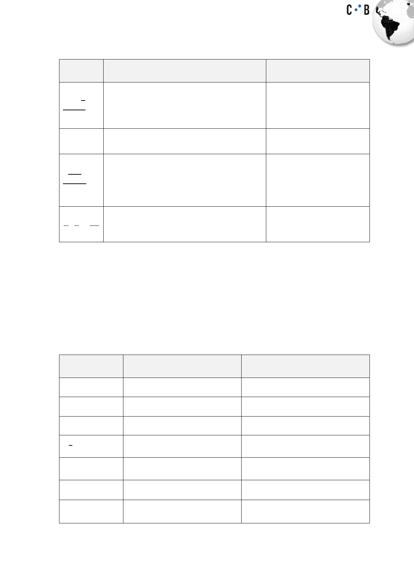
Publicaciones técnicas del Consejo Iberoamericano del Braille
55
Signo
visual
Signo braille Significado
+
+
?a+b*c}*?d+e}
fracción cuyo numerador
es la suma a más el cociente
de b por c, y cuyo
denominador es d más e
+ /
a+b*c
a más b dividido c, con
barra horizontal u oblicua
x + y
??a+b}*?c+d}}*?X+y}
fracción cuyo numerador
es la fracción de numerador
a más b y denominador c
más d y cuyo denominador
es denominador es x más y
3
5
·
2
7
=
6
35
#c¿ [#b= =#f:¿
tres quintos por dos
séptimos es igual a seis
treintaicincoavos
5.2. Potencias y raíces
5.2.1. Potencias
Dado que, desde el punto de vista gráfico, el exponente de una potencia es un
superíndice, se escribirá a continuación de la base precedido por el indicador braille
correspondiente
§
(puntos 16) —ver 4.2—.
Ejemp
los:
Signo visual Signo braille Significado
x§#b
x al cuadrado
x§n
x elevado a n
x§-#A
x elevado a -1
x§#A;
x elevado a ½
X×?a+b}
x elevado a la suma de a+b
(
)
x§-(a+b)
x elevado a menos (a+b)
x§n§#b
x elevado al cuadrado de n
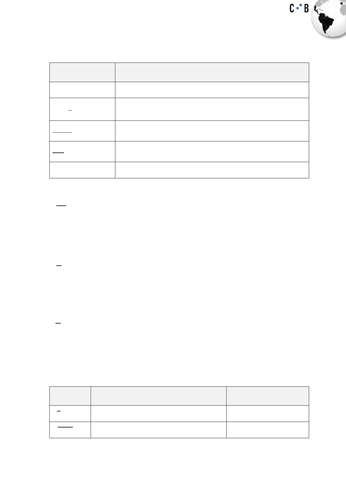
Publicaciones técnicas del Consejo Iberoamericano del Braille
56
Signo visual Signo braille
7
2
+ + 1
#gx§#c-#bX×#b+X+#a
3a +
1
2
#c@a+#a; X×#by×#c
+ 1
1
?X×#b+#a}*?X×#b-#A}
4
3
#d*¿#c@A§#b}
+
X×a+b
5.2.2. Raíces
ë Ý 1246 … 156 signo de raíz
El índice de raíz se coloca entre los dos elementos braille que componen el signo y, a
continuación de este, se escribe el radicando.
Ejemplo
:
8
ë#cÝ#h Raíz cúbica de ocho
En el caso de la raíz cuadrada, se omite el índice (2) por analogía con la escritura en
tinta.
Ejemplo:
8
ëÝ#h Raíz cuadrada de ocho
Cuando el radicando sea una expresión compuesta, se cierra entre paréntesis
auxiliares. Gráficamente, el radicando se distingue porque abarca todo lo que se
encuentra bajo el trazo horizontal del signo de raíz.
Ejemplos:
Signo
visual
Signo braille Significado
ëÝx
raíz cuadrada de x
+
ënÝ?a+b}
raíz enésima de a más b
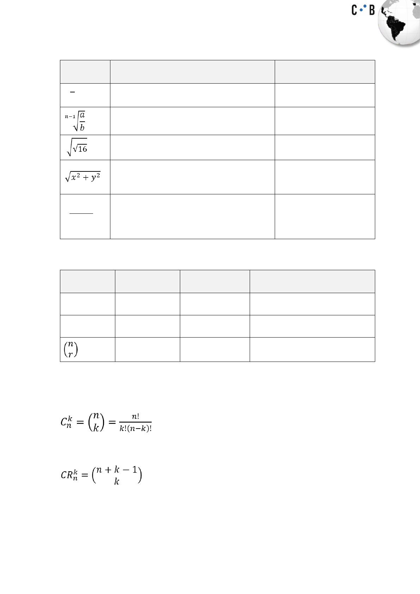
Publicaciones técnicas del Consejo Iberoamericano del Braille
57
Signo
visual
Signo braille Significado
+
ënÝa+b
a la raíz enésima de a se
le suma b
ën-#AÝ¿A*b}
raíz de índice n-1 de a
partido por b
ëÝëÝ#Af
raíz cuadrada de la raíz
cuadrada de 16
ëÝ¿x§#b+y§#b}
raíz cuadrada de la suma
de x al cuadrado más
y al cuadrado
3
+9
ë#cÝ¿#c@A§#b-a}+#i
raíz cúbica de la diferencia
de tres a
al cuadrado menos a y,
fuera de la raíz, más 9
5.3. Combinatoria
Signo visual Signo braille Puntos braille Significado
n!
n^.
1345-45-3 factorial de n
n!!
n^.^.
1345-45-3-45-3 doble factorial de n
{(n:r)
46-126-1345-25-
1235-345
coeficiente binómico n sobre r
Como se puede ver en los siguientes ejemplos, las permutaciones, variaciones y
combinaciones, con o sin repetición, se escribirán tal y como vienen en el original,
pero sin necesidad de respetar el desplazamiento de índices.
combinaciones sin repetición
{cín×k={(n:k)=n^.*?k^.(n-K)^.}
combinaciones con repetición
{c{rín×k={(n+k-#A:K)
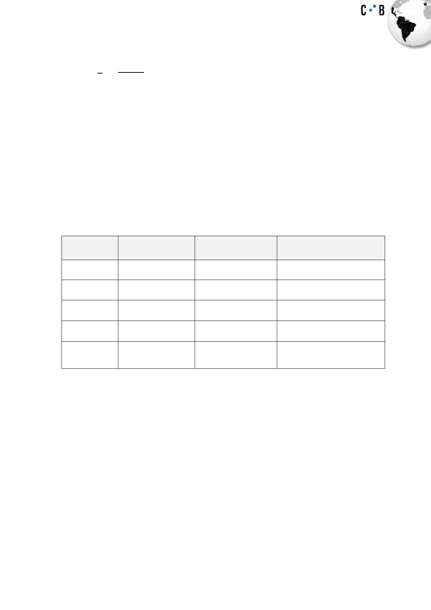
Publicaciones técnicas del Consejo Iberoamericano del Braille
58
=
=
!
(
)
!
variaciones sin repetición
{vín×k=n×_-K=n^.*(n-K)^.
=
variaciones con repetición
{v{rín§K=n§K
,
=
(
1
)(
2
)
…
(
+ 1
)
variaciones sin repetición
{ví?n ,K}=
=n(n-#A)(
n-#b)...(n-k+#a)
5.4. Otros operadores
Signo visual Signo braille Puntos braille Significado
±
+:-
235-25-36 más o menos
-:+
36-25-235 menos o más
%
%]
456-356 tanto por ciento
‰
%]]
456-356-356 tanto por mil
|
…
|
% ...%
456-0d-...-456-0d
valor absoluto; módulo
(barras verticales)
Ejemplos:
6 ± 2 #f+:-#b
21 % #bA%]
|
|
= 1 %¾A% =#A valor absoluto de alfa igual a uno
|
|
= 1 % x% =#A valor absoluto de equis igual a uno
5.5. Operadores sobre conjuntos de números
5.5.1. Sumatoria o sumatorio
^s Ý 45-234-…-156

Publicaciones técnicas del Consejo Iberoamericano del Braille
59
Los límites de la suma, si aparecen en diferentes niveles, se colocan entre la letra griega
sigma mayúscula
^s
(45-234) y el signo
Ý
(156), separados por el signo
:
(25).
Ejemplos:
suma de j=1 hasta 4 de j
2
^sj=#A:#dÝj§#b
2
sumatoria para 1 menor o igual que j menor o igual que 4 de j al cuadrado
^s#Aö=jö=#dÝj§#b
En este ejemplo no es necesario escribir los signos de abrir y cerrar paréntesis en
braille, ya que los límites de la suma están ya delimitados por el signo de sumatoria
como apertura y el 156 como cierre.
5.5.2. Productoria o productorio
^p Ý 45-1234-…-156
Los límites del producto, si aparecen en diferentes niveles, se colocan entre la letra
griega pi mayúscula
^p
(45-1234) y el signo
Ý
(156), separados por el signo
:
(25).
Ejemplos:
producto, desde j=1 hasta n, de los S
j
^pj=#A:nÝ{síj
n
S
productorio para 1 menor o igual que j menor o igual que n de S
j
^p#Aö=jö=nÝ{síj
En este ejemplo no es necesario escribir los signos de abrir y cerrar paréntesis en
braille ya que los límites de la suma están ya delimitados por el signo de sumatoria,
como apertura, y 156 como cierre.
5.5.3. Coproductorio o coproductoria
^ñ Ý 45-12456-…-156
Los límites del coproducto, si aparecen en diferentes niveles, se colocan entre el
signo
^ñ
(45-12456) y el signo
Ý
(156), separados por el signo
:
(25).
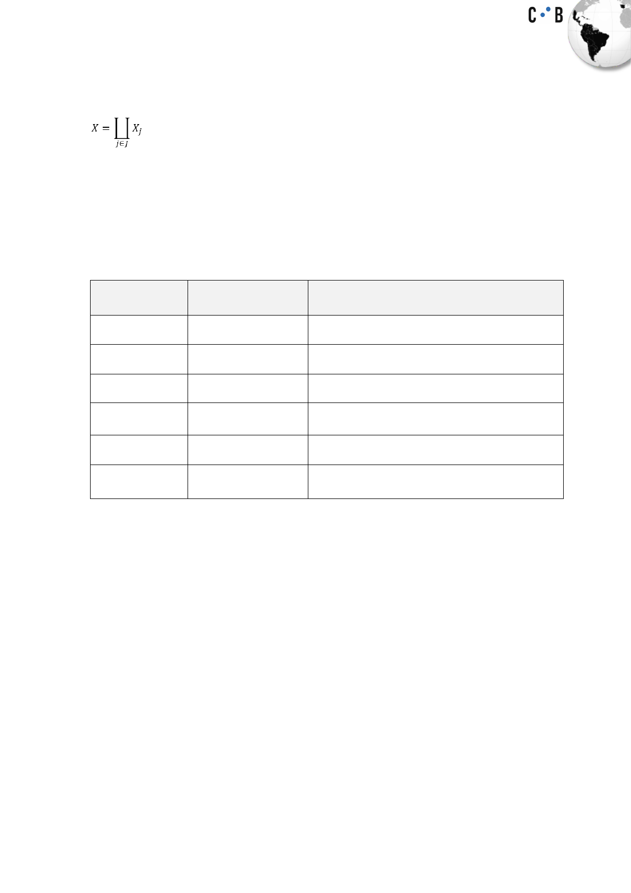
Publicaciones técnicas del Consejo Iberoamericano del Braille
60
Ejemplo:
{X=^ñj(,{jÝ{Xíj
Se incluyen a continuación las funciones más frecuentes sobre conjuntos de números
representadas por símbolos/notaciones textuales.
En braille se representarán igual que en caracteres visuales. Estas representaciones
finalizarán con el punto 3.
Signo visual Signo braille Significado
máx
máX.
máximo
mín
mÍn.
mínimo
mcd
mcd.
máximo común divisor
mcm
mcm.
mínimo común múltiplo
ínf
Ínf.
ínfimo
sup
sUp.
supremo
Se emplearán los delimitadores del original en tinta (paréntesis, corchetes o llaves)
así como los separadores (coma o punto y coma).
Ejemplos:
m.c.d.(28,34)
mcd.(#bh ,#cd)
máx.[28;36] máX.á#bh ;#cfú
5.6. Operadores sobre estructuras bidimensionales
Para su escritura en braille, se representarán de la siguiente manera:
a) Línea en blanco.
b) A continuación, una primera línea en la que se escriben las cabeceras de las
estructuras a operar separadas por los signos de operador. Si se superara la
línea braille, se interrumpe por uno de estos signos y se repite en la línea
siguiente, respetando una sangría de dos espacios en blanco.
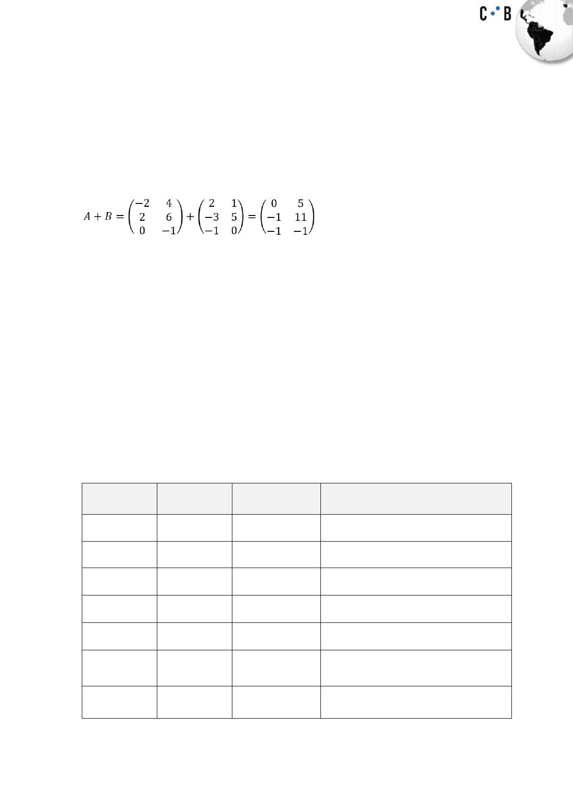
Publicaciones técnicas del Consejo Iberoamericano del Braille
61
c) Línea en blanco.
d) Se representan las estructuras operando en la forma indicada en la sección 3
del capítulo 3. El signo de operación se colocará en la posición que mejor se
ajuste.
e) Línea en blanco.
Ejemplo:
#s{a+{bݥ=
s-#b #dÝ s #b #AÝ s #j #eÝ
l #b #f% + l-#c #e% = l-#A #AA%
( #j -#A) (-#A #j) (-#A -#A)
Capítulo 6. Relaciones aritméticas y algebraicas
6.1. Relaciones
Signo visual Signo braille Puntos braille Significado
=
=
2356 igual a
¾=
4-2356 aproximadamente igual a
=¿
2356-26-0 cuestionado que sea igual a
»=
56-2356 igual por definición
»:=
56-25-2356 corresponde a
≡
==
2356-2356
idéntico a;
congruente con
|
%
456-0d divide a
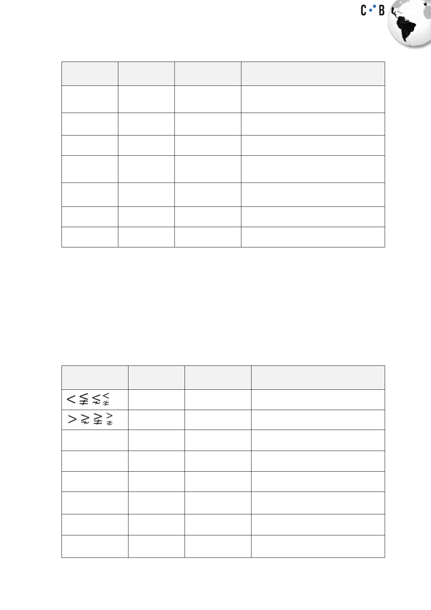
Publicaciones técnicas del Consejo Iberoamericano del Braille
62
Signo visual Signo braille Puntos braille Significado
%*
456-256 proporcional a
»;
56-23 proporción; igualdad de razones
@,
5-2
ratio
@¿.
5-26-3
operador tilde; similar a;
diferencia entre; proporcional a
≈
@=.
5-2356-3 casi igual a; asintóticamente igual a
{:K
46-25-13 progresión geométrica
÷
{:
46-25 progresión aritmética
Ejemplos:
pm·v p»=m_ v p igual por definición a m por v
A≈B {a@=.{b A casi igual a B
4386 #d@,#c»;#h@,#f 4 es a 3 como 8 es a 6
Otras relaciones:
Signo visual Signo braille Puntos braille Significado
ö
246 menor que
o
135 mayor que
öö
246-246 mucho menor que
oo
135-135 mucho mayor que
ö=
246-2356 menor o igual que
o=
135-2356 mayor o igual que
@ö
5-246 anterior a
o,
135-2 posterior a
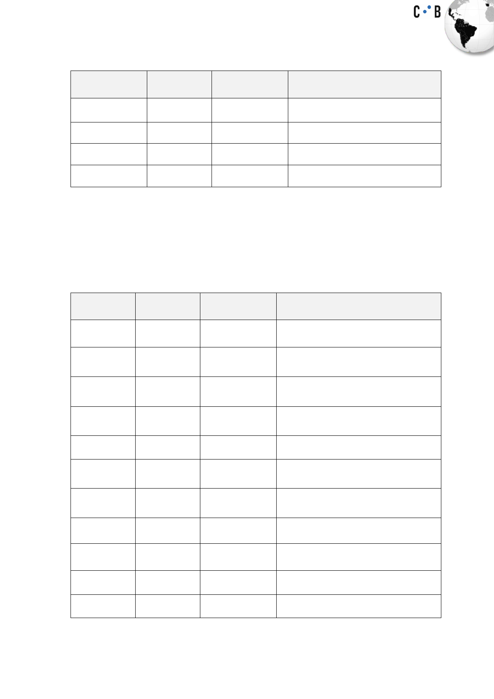
Publicaciones técnicas del Consejo Iberoamericano del Braille
63
Signo visual Signo braille Puntos braille Significado
@öö
5-246-246 muy anterior a
oo,
135-135-2 muy posterior a
@ö=
5-246-2356 anterior o igual a
o,=
135-2-2356 posterior o igual a
6.2. Relaciones negadas
La representación braille de la negación de una relación determinada tiene como
primer carácter los puntos 45, seguido por la representación de la relación que se
niega.
Por ejemplo:
Signo visual Signo braille Puntos braille Significado
^=
45-2356 distinto de
^oö
45-135-246 ni mayor ni menor que
^@=.
45-5-2356-3
no es asintóticamente igual a
^@¿.
45-5-26-3 tilde sube-baja tachada
^%
45-456-0d no es divisor de
^ö
45-246 no menor que
^o
45-135 no mayor que
^ö=
45-246-2356 no es menor ni igual que
^o=
45-135-2356 no es mayor ni igual que
^@ö
45-5-246
no es anterior a
^o,
45-135-2 no es posterior a
Publicaciones técnicas del Consejo Iberoamericano del Braille
64
Capítulo 7. Teoría de conjuntos
7.1. Conceptos básicos
Signo visual Signo braille Puntos braille Significado
=
=
2356 igual a
==
2356-2356 idéntico a
{
@l
5-123
abrir llave de conjuntos
}
%,
456-2 cerrar llave de conjuntos
@(
5-126 abrir llave de clase
),
345-2 cerrar llave de clase
@á
5-12356 abrir corchete de clase
ú,
23456-2 cerrar corchete de clase
,
,
0-2 coma de separación de elementos
|
:
;
%
@,
;
_,
456-0d
5-2
0-23
6-2
tal que
%j
456-245 conjunto vacío
%U
456-136 conjunto o clase universal
(,
126-2 es elemento de; pertenece a
@)
5-345 comprende; tiene como elemento
^(,
45-126-2
no es un elemento de; no
pertenece a
^@)
45-5-345
no comprende; no tiene como
elemento
(.
126-3 Incluido; subconjunto
Publicaciones técnicas del Consejo Iberoamericano del Braille
65
Signo visual Signo braille Puntos braille Significado
(;
126-23 incluido o es igual a
_)
6-345 Incluye; tiene como subconjunto
»)
56-345 incluye o es igual a
^(.
45-126-3 no incluido en
^_)
45-6-345 no incluye a
^(;
45-126-23 no incluido ni es igual a
^»)
45-56-345 no incluye ni es igual a
7.2. Operaciones entre conjuntos
Signo visual Signo braille Puntos braille Significado
∪
%)
456-345 unión
∩
%Ý
456-156 intersección
\) Ý
123456-345-...-156
unión de una familia de
conjuntos
\Ý Ý
123456-156-...-156
intersección de una familia
de conjuntos
@.
5-3 diferencia de conjuntos
∆
^d
45-145
diferencia simétrica de
conjuntos
X
{[
46-236 producto cartesiano
»c{a
56-14-46-1 complementario de A
A’
{aü
46-1-1256 complementario de A
¾c{a
4-14-46-1 complementario de A
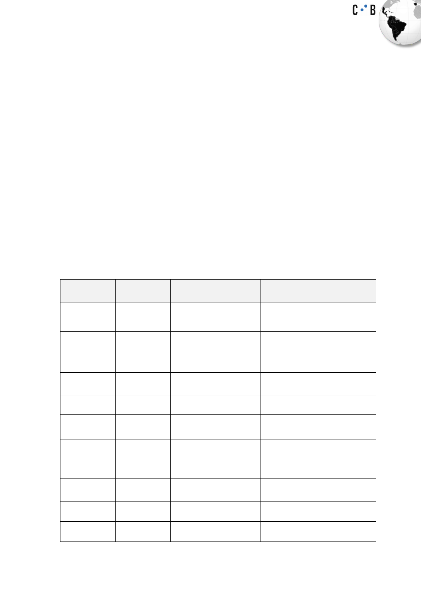
Publicaciones técnicas del Consejo Iberoamericano del Braille
66
Ejemplos:
Sean =
{
2, 4, 6, 8,10
}
y =
{
: , < 7
}
{sean {a=@l#b ,#d ,#f ,#h ,#Aj%,
y {b=@lX@
,
X(,%n
,xö#g%,
B es el conjunto de los elementos x tales que x pertenece al conjunto de los números
naturales y x es menor que 7.
=
{
2, 4, 6
}
{a%Ý{b=@l#b ,#d ,#f%,
\)j(,{iÝ{aíj
Unión para j perteneciente a un conjunto de índices I de la familia A sub j.
Para la unión y la intersección de varios conjuntos se aplicarán las normas vistas para
el sumatorio y productorio (ver capítulo 5).
7.3. Relaciones entre los elementos de un conjunto
Signo visual Signo braille Puntos braille Significado
x»ry
1346-56-1235-13456
x relacionado por la relación
con y
^»r
45-56-1235 negación de la relación
_,
6-2 conjunto cociente
@ö
5-246 precede a; anterior a
o,
135-2 sigue a; posterior a
@ö=
5-246-2356 precede o igual a
o,=
135-2-2356 sigue o igual a
^@ö
45-5-246 no es anterior a
^o,
45-135-2 no es posterior a
^@ö=
45-5-246-2356 no es anterior ni igual a
^o,=
45-135-2-2356 no es posterior ni igual a
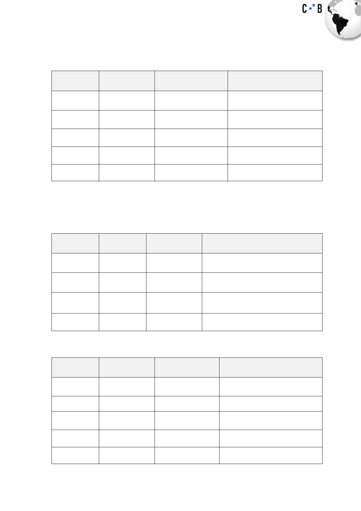
Publicaciones técnicas del Consejo Iberoamericano del Braille
67
7.4. Cardinales
Signo visual Signo braille Puntos braille Significado
Card
{card.
46-14-1-1235-145-3 cardinal de un conjunto
#
#K
3456-13 cardinal de un conjunto
∞
#ü
3456-1256 infinito
א
_ü
6-1256 aleph
#p
3456-1234 potencia de un conjunto
Capítulo 8. Lógica
8.1. Cuantificadores
Signo visual Signo braille Puntos braille Significado
{.
46-3 cuantificador universal: para todo
{?
46-26
cuantificador existencial: existe por
lo menos un elemento
!
{;
46-23
cuantificador unitario: existe un
único elemento
^{¿
45-46-26 no existe
8.2. Lógica de proposiciones
Signo visual Signo braille Puntos braille Significado
%=
456-2356 tautología
^%=
45-456-2356 no tautología
%s
456-234 proposición verdadera
%(
456-126 proposición falsa
%i
456-24 disyunción (o)
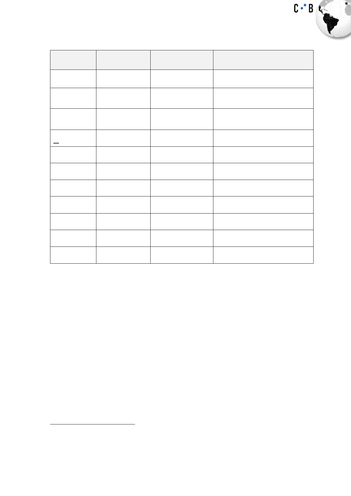
Publicaciones técnicas del Consejo Iberoamericano del Braille
68
Signo visual Signo braille Puntos braille Significado
%¿
456-26 conjunción (y)
\i Ý
123456-24...156
11
d
isyunción de una familia
de proposiciones
\¿ Ý
123456-26...156
11
c
onjunción de una familia
de proposiciones
%é
456-2346 disyunción excluyente
¬
_.
6-3
12
negación lógica
~
_.
6-3
12
negación lógica
ö:o
246-25-135 doble implicación «si y solo si»
:o
25-135 implicación directa; implica
ö:
246-25 implicación recíproca; porque
_§
0-6-16-0 por lo tanto
¾Í
0-4-34-0 puesto que
Ejemplos:
, ¬() ¬¬
{.p ,q_.(p%¿q)ö:o_.p%i_.q
: ~=
^{?p@,q%¿_.p=%=
Capítulo 9. Análisis y cálculo
9.1. Generalidades
Esta sección recoge ejemplos del modo en que se escriben las notaciones generales
de funciones. En ellos se utilizan los signos de la escritura básica, además de algunos
11
En caso de aparecer índices, se seguirá la sistemática indicada en los capítulos 5 y 7 para sumatorio,
productorio…: índice inferior, puntos 25, índice superior.
12
Cualquiera que sea la representación visual de la negación lógica, en braille se representará con el signo 6-3.
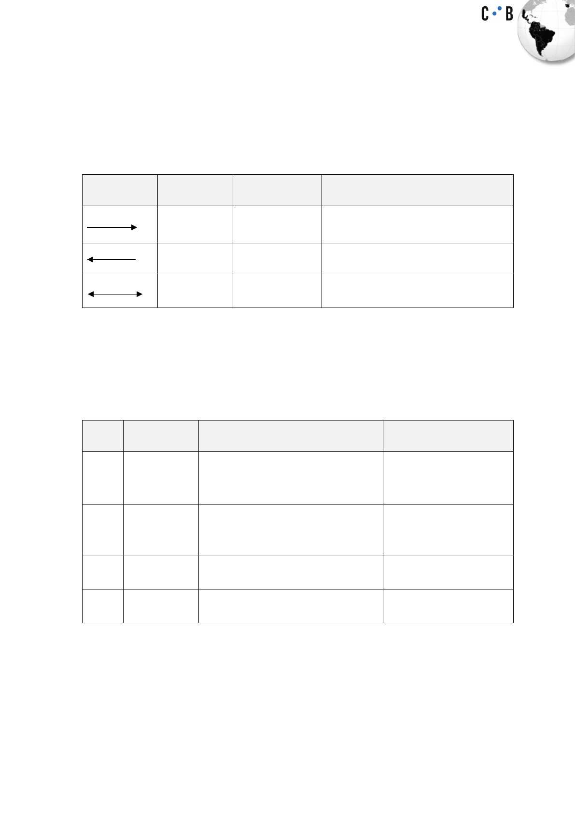
Publicaciones técnicas del Consejo Iberoamericano del Braille
69
signos específicos para la representación de funciones que se relacionan a
continuación.
Para la representación de funciones en braille se utilizará la letra individual que se
corresponda con el original tinta sin utilizar el distintivo de variante tipográfica (f, g,
h...).
Signo visual Signo braille Puntos braille Significado
::,
25-25-2
correspondencia o aplicación
entre conjuntos
@::
5-25-25 correspondencia inversa
@::,
5-25-25-2 aplicación biyectiva
Cuando la flecha de función está afectada por un índice, este se escribe en braille
entre los dos elementos 25 que contiene la flecha:
:f:,
Signo
visual
Signo braille Puntos braille Significado
:
@,
5-2, tal y como se representan
los dos puntos en otras ocasiones
(división, razón, tal que...)
dos puntos
(cuando se emplea
en funciones)
ƒ
-1
f§-#A
fó.
124-16-36-3456-1
124-346-3 (forma abreviada)
función inversa de f
≡
==
2356-2356 idéntico a
_;
6-23
composición de
funciones
Escritura de pares ordenados
En braille, como en caracteres visuales, los pares ordenados se escriben entre
paréntesis con coma de separación.
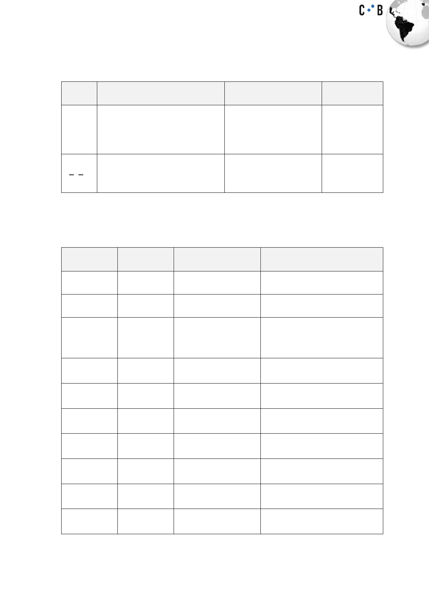
Publicaciones técnicas del Consejo Iberoamericano del Braille
70
Ejemplos:
Signo
visual
Signo braille Puntos braille Significado
(
,
)
(xÍ#A ,xÍ#b)
126-1346-34-3456-1-0-
2-1346-34-3456-12-345
par ordenado
x
1
, x
2
(
1
2
,
3
2
)
(#A; ,#c; )
126-3456-1-23-0-2-
3456-14-23-0-345
par ordenado
un medio,
tres medios
Para la representación de símbolos habituales en Teoría de Funciones se siguen las
reglas establecidas en el apartado 5.5.
Por ejemplo:
Signo visual Signo braille Puntos braille Significado
Dom
{dom.
46-145-135-134-3 Dominio
Or
{or.
46-135-1235-3 Original
Img
Im
{img.
{im.
46-24-134-1245-3
46-24-134-3
Imagen
conc
conc.
14-135-1345-14-3 cóncavo
conv
conv.
14-135-1345-1236-3 convexo
crec
crec.
14-1235-15-14-3 creciente
dec
dec.
145-15-14-3 decreciente
dec
mAnt.
134-1-1345-2345-3 decimal o mantisa
arg
Arg.
1-1235-1245-3 argumento
rot
rot.
1235-135-2345-3 rotacional o rotor

Publicaciones técnicas del Consejo Iberoamericano del Braille
71
Signo visual Signo braille Puntos braille Significado
div
div.
145-24-1236-3 divergencia
grad
grAd.
1245-1235-1-145-3 gradiente
Re
{re.
46-1235-15-3 Parte real
Im
{im.
46-24-134-3 Parte imaginaria
Rec
{rec.
46-1235-15-14-3 Recorrido
Cualquier otro símbolo/otra notación seguirá lo normado en el capítulo 5.
Ejemplos:
Signo visual Signo braille Significado
:
f@,{a::,{b
aplicación ƒ de A
en B
{a:f:,{b
aplicación ƒ de A
en B
{b:f×-#a:,{a
aplicación inversa
de ƒ, de B en A
(ƒ a la -1 de B en A)
{b:fó.:,{a
aplicación inversa
de ƒ, de B en A
(forma abreviada)
{a@::,{b
aplicación biyectiva
de A en B
(
)
=
f(x)=y
ƒ de x es igual a y
0
f==#j
ƒ es idéntico a cero
() = (
(
)
)
f_;g(x)=f(g(x))
composición de
funciones
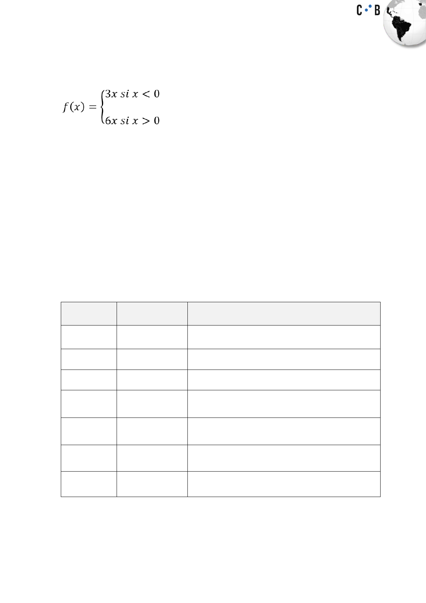
Publicaciones técnicas del Consejo Iberoamericano del Braille
72
Función a trozos
#t#bü¥ f(x)=
#cx si xö#j
#fx si xo#j
Véase capítulo 3, donde quedó establecida esta forma de representación.
Intervalos
Se utilizan los signos de paréntesis comunes o de corchetes al igual que en caracteres
visuales.
Signo visual Signo braille Significado
], [
úa ,bá
intervalo abierto de extremos a y b
(, )
(A ,b)
intervalo abierto de extremos a y b
[, ]
áa ,bú
intervalo cerrado de extremos a y b
[, [
áa ,bá
intervalo cerrado por la izquierda y abierto
por la derecha
[, )
áa ,b)
intervalo cerrado por la izquierda y abierto
por la derecha
], ]
úa ,bú
intervalo abierto por la izquierda y cerrado
por la derecha
(, ]
(a ,bú
intervalo abierto por la izquierda y cerrado
por la derecha
Publicaciones técnicas del Consejo Iberoamericano del Braille
73
9.2. Límites
Signo visual Signo braille Puntos braille Significado
lim.
123-24-134-3
13
límite
:,
25-2 tiende a
%.
456-3 tiende decreciendo a
%A
456-1 tiende creciendo a
¾clim.
4-14-123-24-134-3 límite superior
limsUp.
123-24-134-234-
136-1234-3
límite superior
_-lim.
6-36-123-24-134-3 límite inferior
liminf.
123-24-134-24-
1345-126-3
límite inferior
Si el «límite» tiene en caracteres visuales información suscrita, en braille esta se
escribirá entre el signo de «límite» y el carácter 156.
Signo visual Signo braille Significado
x:,c
x tiende a c
x:,#ü
x tiende a infinito
lim
lim.x:,cÝ
límite cuando x tiende a c
lim
lim.x%AcÝ
límite cuando x tiende
creciendo a c
lim
lim.x:,#j-.Ý
límite cuando x tiende a 0
por la izquierda
lim
lim.x%.cÝ
límite cuando x tiende
decreciendo a c
13
Véase lo acordado en apartado 5.5 respecto a símbolos y notaciones.
Publicaciones técnicas del Consejo Iberoamericano del Braille
74
Signo visual Signo braille Significado
lim
lim.X:,#j+.Ý
límite cuando x tiende a 0
por la derecha
Para simplificar la representación braille en desarrollos en los que se repite una
expresión del operador límite, se puede utilizar la forma
lÝ
(123-156), indicando
entre estos dos signos el valor al que tiende la variable. Ello deberá explicarse en
Nota de transcripción braille.
Ejemplos:
lim.X:,cÝ(f(X)+g(X))=
=lim.x:,c
Ýf(
X)+lim.X:,cÝg
(x)
Si se sustituye la expresión lim.x:,cÝ por la forma abreviada lcÝ, su
transcripción sería:
lcÝ(f(X)+g(X))=lcÝf(X)+lcÝg(X)
En el ejemplo que viene a continuación,
lim
+ 3
5
=
= lim
+
= lim
1 +
=
1
0
=
en braille se ha sustituido
lim.x:,#üÝ
por la forma abreviada
l#üÝ
; su transcripción sería:
l#üÝ?X×#b+#cX}*¿x-#e}=
=#ü*#ü=
=l#üÝ¿x§#b*x§#b+#cX*x§#b}*
*¿x*
x
§#b-#e*x§#b}=
=l#üÝ?#a+
#c*x}*
¿#A*x#e*x§#b}=
=#A*#j=#ü
Publicaciones técnicas del Consejo Iberoamericano del Braille
75
9.3. Derivadas y diferenciales
Para la representación de incrementos se utilizará Δ (delta mayúscula).
Para la representación de diferenciales se utilizará la d minúscula sin utilizar ningún
distintivo de variante tipográfica.
Signo visual Signo braille Puntos braille Significado
Δ
^d
45-145 incremento de...
d
d
145 diferencial de...
∂
%d
456-145 derivada parcial
Derivada de una función
Signo visual Signo braille Significado
¿df}*¿dx}
derivada de «ƒ» respecto de «x»
d*¿dx}f
derivada, respecto de «x», de «ƒ»
(())
{d(f(X))
derivada de «ƒ» de «x»
Si una función ƒ es derivable en todos los puntos de su dominio, queda
definida la función derivada que suele notarse con ƒ’.
Por ejemplo:
Si ƒ
() =
2
16T, entonces ƒ () = 2
{si f(x)=x§#b, entonces fü(x)=#bx
Derivada de orden n
Signo visual Signo braille Significado
¿d§nf}*¿dx§n}
derivada enésima de «ƒ»
respecto de «x»

Publicaciones técnicas del Consejo Iberoamericano del Braille
76
Signo visual Signo braille Significado
d§n*¿dx§n}f
derivada enésima, respecto
de «x», de «ƒ»
Como opción alternativa, que abrevia la representación braille de las derivadas, se
puede utilizar la siguiente secuencia:
1.º) Signo formado por los puntos 1456.
2.º) Orden de la derivada si es superior a uno.
3.º) Variable de derivación.
4.º) Signo formado por los puntos 156.
5.º) Función a derivar.
La notación abreviada se explicará en una nota aclaratoria.
Signo visual Signo braille Significado
¥xÝf
derivada respecto de «x», de «ƒ»
¥xÝf
derivada respecto de «x», de «ƒ»
¥nxÝf
derivada enésima respecto de «x», de «ƒ»
¥nxÝf
derivada enésima respecto de «x», de «ƒ»
Derivada parcial
Derivada parcial de «ƒ» respecto de «x».
¿%df}*¿%dx}
16T Derivada parcial, respecto de «x», de «ƒ».
%d*¿%dx}f
Publicaciones técnicas del Consejo Iberoamericano del Braille
77
Derivada parcial n-ésima
Derivada parcial enésima de «ƒ» respecto de «x» n veces
¿%d§nf}*¿%dx§n}
Derivada parcial enésima de «ƒ» respecto de «x», n veces.
%d§n*¿%dx§n}f
Derivada parcial segunda respecto de «x» y de «y».
%d§#b*¿%dx%dy}
Derivada parcial segunda de «ƒ» respecto de «x» y de «y».
¿%d§#b@f}*¿%dx%dy}
Derivada parcial de orden «m+n», respecto de «x» m veces y respecto
de «y» n veces
%d×?m+n}*¿%dx§m%dy§n}
Derivada parcial de orden «m+n» de «ƒ», respecto de «x» m veces
y respecto de «y» n veces
?%d×?m+n}f}*?%dX×m%dy×n}
Como opción alternativa, que abrevia la representación braille de las derivadas
parciales, se puede utilizar la siguiente secuencia:
1.º) Signo formado por los puntos 56-1456.
2.º) Orden de la derivada parcial.
3.º) Variable o variables respecto de las que se realiza la derivada.
4.º) Signo formado por los puntos 156.
5.º) Función a derivar.
Publicaciones técnicas del Consejo Iberoamericano del Braille
78
Signo visual Signo braille Significado
»¥xÝf
derivada parcial respecto de «x»,
de «ƒ»
»¥nxÝf
derivada parcial enésima de «ƒ»
respecto de «x» n veces
»¥nxÝf
derivada parcial enésima respecto
de «x» n veces, de «ƒ»
»¥#bxyÝf
derivada parcial segunda de «ƒ»
respecto de «x» y de «y»
»¥#bxyÝf
derivada parcial segunda de «ƒ»
respecto de «x» y de «y»
»¥m+nXmynÝf
derivada parcial de orden «m+n»
de «ƒ», respecto de «x» m veces y
respecto de «y» n veces
»¥m+nXmynÝf
derivada parcial de orden «m+n»,
respecto de «x» m veces y respecto
de «y» n veces
Ejemplo:
(, )
=
(
(, )
)
¿%d§#bf(x ,y)}*¿%dx§#b}=
=%d*%dy
(%df(x ,y)*%dx)
Notación abreviada:
»¥#bxÝf(x ,y)=»¥yÝ(»¥xÝf(x ,y))
Nabla, laplaciano, d’alambertiano
Signo visual Signo braille Puntos braille Significado
¾ñ
4-12456 operador nabla
Δ
%[
456-236 operador laplaciano
Publicaciones técnicas del Consejo Iberoamericano del Braille
79
Signo visual Signo braille Puntos braille Significado
%y
456-13456 operador d’alambertiano
9.4. Integrales
Signo visual Signo braille Puntos braille Significado
ç Ý
12346-…-156
integral indefinida,
signo de integral
çç Ý
12346-12346-…-156
integral doble
ççç Ý
12346-12346-12346-…-
156
integral triple
ç] Ý
12346-356-…-156 integral de contorno
c
ç]{cÝ
12346-356-46-14-…-156
integral de contorno
a lo largo de la curva C
ç.¾s Ý
12346-3-4-234-…-156 integral de línea
@;
5-23
producto de
convolución
La representación en caracteres visuales de «integral definida» se caracteriza porque
el signo de integral está acompañado por un subíndice y un superíndice, ambos a la
derecha del signo. Esta información se escribirá en braille entre los dos caracteres
que forman el signo de integral, escribiendo en primer lugar el subíndice y a
continuación el superíndice, separados ambos por el carácter braille
:
(25).
Signo visual Signo braille Significado
ça:b Ý
integral definida entre a y b
¾cça:b Ý
integral superior definida entre a y b
_-ça:b Ý
integral inferior definida entre a y b
Publicaciones técnicas del Consejo Iberoamericano del Braille
80
Ejemplos:
çÝX×#b@dX
ç#a:#dÝX×#b@dX=á#a: X×#cúí#a×#d=#ba
Capítulo 10. Funciones clásicas
10.1. Sucesiones, progresiones y series
10.1.1. Sucesiones
Signo visual Signo braille Puntos braille Significado
(s
n
)
(sÍn)
126-234-34-1345-345
sucesión de término
general s sub n
{s
n
}
@lsÍn%,
5-123-234-34-1345-
456-2
sucesión de término
general s sub n
S
n
sÍn
234-34-1345
sucesión de término
general s sub n
Ejemplos:
(
) = (1, 3, . . . , 2+ 1, . . . )
(sÍn)=(#A ,#c ,... ,#bn+#a ,...)
{
} = {, , . . . ,1
1
10
, . . . }
@l{pík%,=@l#j,i ,#j,ii ,... ,
#A-#A*¿#Aj§K} ,...%,
Publicaciones técnicas del Consejo Iberoamericano del Braille
81
Obsérvese que en el caso de los puntos suspensivos no es necesario dejar espacio en
blanco por delante.
En la transcripción de documentos se respetará la representación utilizada por el
autor.
Ejemplo:
lim
Límite de s
n
cuando n tiende a infinito
lim.n:,#üÝ{sín
Utilizando la abreviatura para lim. (ver 9.2. Límites):
l#üÝsÍn
10.1.2. Progresiones
Signo visual Signo braille Puntos braille Significado
÷
{:
46-25 progresión aritmética
{:k
46-25-13
progresión geométrica
10.1.3. Series
^sn=#A:#üÝ#A*n§#b=
=lim.K:,#üÝ^sn=#A:KÝ#A*n§#b=
=#a+#a* +#a} +#a,+...
10.2. Funciones representadas por símbolos/notaciones literales
En braille se representarán igual que en caracteres visuales. Estas representaciones
finalizarán con el punto 3.
Siguiendo los criterios establecidos, estas notaciones pueden reemplazarse por otras
que sean de uso frecuente en alguno de los países en los cuales vaya a regir el
presente código.
A continuación, se indican algunas de ellas.
Publicaciones técnicas del Consejo Iberoamericano del Braille
82
10.2.1. Funciones exponenciales y logarítmicas
Signo visual Signo braille Significado
exp
exp.
exponencial (en base e)
log
b
x
log.bÝx
logaritmo en base b de x
logx
log.x
logaritmo decimal de x
Ln x
ln x
ln.x
logaritmo natural o neperiano de x
alog x
antilog x
Alog.x
Antilog.x
antilogaritmo de x
aln x
Aln.x
antilogaritmo natural o neperiano de x
cologx
colog.x
cologaritmo de x
Logaritmos decimales de característica negativa: para escribir en braille la
característica de un logaritmo decimal cuando sea negativa, se utilizarán los
caracteres braille de la tercera serie (ver Introducción) anteponiéndole el signo
numérico.
Ejemplos:
El logaritmo decimal de 0,2 tiene característica -1 y
mantisa 30103
log.#j,b=#U,cjAjc
-28,345
Logaritmo decimal de característica -28 y mantisa 345
#vá,cde
Publicaciones técnicas del Consejo Iberoamericano del Braille
83
10.2.2. Funciones trigonométricas (circulares)
Signo visual Signo braille
Otras
representaciones
Significado
sin
sen
sin.
sen.
Celda vacía. seno
cos
cos.
Celda vacía. coseno
tan
tg
tAn.
tg.
Celda vacía. tangente
cot
cotg
cot.
cotg.
Celda vacía. cotangente
sec
sec.
Celda vacía. secante
csc
cosec
csc.
cosec.
Celda vacía. cosecante
arcsin
arcsen
Arcsin.
Arcsen.
Asin.
Asen.
arco seno
arccos
Arccos.
Acos.
arco coseno
arctan
arctg
ArctAn.
Arctg.
AtAn.
Atg.
arco tangente
arccot
arccotg
Arccot.
Arccotg.
Acot.
Acotg.
arco cotangente
arcsec
Arcsec.
Asec.
arco secante
arccsc
arccosec
Arccsc.
Arccosec.
Acsc.
Acosec.
arco cosecante
Publicaciones técnicas del Consejo Iberoamericano del Braille
84
Signo visual Signo braille Significado
versin
versen
versin.
versen.
verseno
coversin
coversen
coversin.
coversen.
coverseno
semiversin
semiversen
semiversin.
semiversen.
semiverseno
semicoversin
semicoversen
semicoversin.
semicoversen.
semicoverseno
10.2.3. Funciones hiperbólicas
Signo visual Signo braille
Otras
representaciones
Significado
sinh
senh
sinh.
senh.
sh.
seno hiperbólico
cosh
cosh. ch.
coseno
hiperbólico
tanh
tgh
tAnh.
tgh.
th.
tangente
hiperbólica
coth
ctgh
coth.
ctgh.
cth.
cotangente
hiperbólica
sech
sech. sch.
secante
hiperbólica
csch
csech
csch.
cosech.
csch.
cosecante
hiperbólica
Publicaciones técnicas del Consejo Iberoamericano del Braille
85
Signo visual Signo braille
Otras
representaciones
Significado
argsinh
argsenh
Argsinh.
Argsenh.
Ash.
argumento seno
hiperbólico
argcosh
Argcosh. Ach.
argumento
coseno
hiperbólico
argtanh
argtgh
ArgtAnh.
Argtgh.
Ath.
argumento
tangente
hiperbólica
argcoth
argcotgh
Argcoth.
Argcotgh.
Acth.
argumento
cotangente
hiperbólica
argsech
Argsech. Asch.
argumento
secante
hiperbólica
argcsch
argcosech
Argcsch.
Argcosech.
Acsch.
argumento
cosecante
hiperbólica
10.2.4. Otras funciones, parámetros y características representadas
por símbolos
Signo visual Signo braille Puntos braille Significado
(s
n
)
(sÍn)
126-234-34-1345-
345
sucesión de término general s
sub n
int
int.
24-1345-2345-3 parte entera
dec
dec.
145-15-14-3 parte decimal
sgn
sgn.
234-1245-1345-3 signo
abs
Abs.
1-12-234-3 valor absoluto
Publicaciones técnicas del Consejo Iberoamericano del Braille
86
Signo visual Signo braille Puntos braille Significado
Re
{re.
46-1235-15-3
parte real de un número
complejo
Im
{im.
46-24-134-3
parte imaginaria de un número
complejo
rg
rg.
1235-1345-3 rango
Adj
{adj.
46-1-145-245-3 adjunta
Si en este capítulo no aparece alguna función o símbolo literal, se seguirá la misma
norma que en el apartado 10.2. Es decir, punto 3 después, con nota de transcripción
indicando su significado.
Capítulo 11. Geometría y vectores
Nota: las letras que aparecen no forman parte de los signos definidos. Son genéricas
y pueden ser otras, según el contexto.
11.1. Elementos geométricos
Signo
visual
Signo braille Puntos braille Significado
@:,r
5-25-2-1235 recta r
@:,?{p{q}
5-25-2-26-46-
1234-46-12345-35
recta determinada
por los puntos P y Q
:,z
25-2-1356 semirrecta derecha z
@:z
5-25-1356 semirrecta izquierda z
:,?{o{a}
25-2-26-46-135-
46-1-35
semirrecta de origen O
que pasa por el punto A
¾c?{a{b}
4-14-26-46-1-46-
12-35
segmento AB
^:{a
45-25-46-1 ángulo A
Publicaciones técnicas del Consejo Iberoamericano del Braille
87
Signo
visual
Signo braille Puntos braille Significado
^:¿Aob}
45-25-26-1-135-
12-35
ángulo aob
%-
456-36 ángulo recto
{Ý
46-156
ángulo orientado
positivo
{)
46-345
ángulo orientado
negativo
¾:s
4-25-234 arco s
abc
¿)¿Abc}
26-345-26-1-12-
14-35
arco correspondiente
al ángulo abc
11.2. Vectores
Signo visual Signo braille Puntos braille Significado
:,v
25-2-1236 vector v
@:v
5-25-1236
vector opuesto del
vector v
|
|
% :,v%
456-0D-25-2-1236-456-
0D
módulo del vector v
%l:,v%l
456-123-25-2-1236-456-
123
norma del vector v
_Ý
6-156
vector axial positivo
¾)
4-345 vector axial negativo
Nota: cuando no haya lugar a confusión según el contexto, podrá suprimirse la flecha
a la derecha, tal como se mostrará en uno de los ejemplos del producto escalar.
Como ya se ha dicho en capítulos anteriores, con «0D» se indica que el signo braille
que se haya de escribir en ese lugar no ha de tener ni el punto 1, ni el 2, ni el 3
(semicajetín en blanco por la derecha). Si no se cumple esta condición, es necesario
dejar un espacio en blanco entre el signo de «cierre de barra» y el signo siguiente.
Publicaciones técnicas del Consejo Iberoamericano del Braille
88
Ejemplos:
Módulo del vector AB % :,?{a{b}%
Norma del vector AB %l:,?{a{b}%l
Vector axial positivo alfa
_ݾA
Vec
tor axial negativo alfa
¾)¾A
Vector libre AB á:,?{a{b}ú
11.3. Relaciones geométricas
Signo visual Signo braille Puntos braille Significado
{ö
46-246 es secante con
%l
456-123 es paralela a
#
%l=
456-123-2356 es paralelo e igual a
#.
3456-3
perpendicular a
ortogonal a
»¿;
56-26-23 homólogo a/semejante a
~
@¿.
5-26-3 equivale a/similar a
14
%ë
456-1246 proyectividad
%ñ
456-12456 perspectividad
@¿=
5-26-2356 congruente con
Ejemplos:
La recta
es paralela al segmento de extremos M y N
@:,l%l¾c?{m{n}
14
También en capítulo 6.
Publicaciones técnicas del Consejo Iberoamericano del Braille
89
La recta determinada por los puntos A y B es perpendicular a la
semirrecta de origen O que contiene al punto X
@:,?{a{b}#.:,?{o{X}
Nota: en cuanto a las respectivas negaciones de cada una de estas relaciones, valen
las reglas vistas para las relaciones tratadas en el capítulo 6. Es decir, los signos de
«negación» de existencia de una relación (o «relaciones negativas») en braille tienen
como primer carácter el signo formado por los puntos 45.
Por ejemplo:
Signo visual Signo braille Puntos braille Significado
^%l
45-456-123 no paralela
^#.
45-3456-3
no perpendicular
11.4. Operaciones entre elementos geométricos
Signo
visual
Signo braille Puntos braille Significado
:,v_ :,w
25-2-1236-6-0-
25-2-2456
producto escalar
del vector v
por el vector w
@k:,v ,:,
w{,
5-13-25-2-1236-
0-2-25-2-2456-
46-2
producto escalar
del vector v
por el vector w
Este es un ejemplo en el cual, si en el contexto queda claro que v y w son vectores,
pueden suprimirse las flechas:
v. w
@Kv ,w{,
Signo visual Signo braille Puntos braille Significado
×
¾[
4-236 producto vectorial
×
¾[
4-236 producto vectorial
Publicaciones técnicas del Consejo Iberoamericano del Braille
90
Signo visual Signo braille Puntos braille Significado
»,
56-2 producto vectorial
ö+
246-235 suma directa
ö[
246-236 producto tensorial
%ö+
456-246-235 suma ortogonal
+
¾+
4-235 suma de vectores
¾-
4-36 resta de vectores
Nota: cuando no hay lugar a confusión, estos dos últimos signos suelen reemplazarse
por los signos comunes de suma y resta.
Ejemplos:
:,v¾[:,w
:,v¾+:,w :,v+:,w
11.5. Medidas de ángulos
Signo visual Signo braille Puntos braille Significado
rAd.
1235-1-145-3 radián
°
]
356 grados sexagesimales
ü
1256 minutos sexagesimales
üü
1256-1256 segundos sexagesimales
g
1245 grados centesimales
§ü
16-1256 minutos centesimales
§üü
16-1256-1256 segundos centesimales
Publicaciones técnicas del Consejo Iberoamericano del Braille
91
Ejemplos:
90º noventa grados sexagesimales
#ij] (3456-24-245-356)
37º 22’ 49’’ treinta y siete grados veintidós minutos cuarenta y nueve segundos
#cg]#bbü#diüü
(3456-14-1245-356-3456-12-12-1256-3456-145-24-1256-1256)
11.6. Polígonos y curvas
En el caso de los polígonos, no se emplean los paréntesis auxiliares para encerrar las
letras que designan a los vértices, ya que identificada la figura, queda determinada la
cantidad de vértices.
De acuerdo con la observación anterior, la representación en caracteres visuales de
los polígonos siempre consistirá en el dibujo de la figura correspondiente en posición
de superescrito sobre las letras que designen a los vértices.
La representación braille se efectuará escribiendo las letras de los vértices a
continuación del correspondiente signo que caracteriza a la figura.
Signo visual Signo braille Puntos braille Significado
_úabc
6-23456-1-12-14 triángulo abc
%[
456-236 triángulo rectángulo
%y
456-13456 cuadrado
çy
12346-13456 rectángulo
ço
12346-135 polígono
öo
246-135 círculo
¿}
26-35 curva geométrica
Publicaciones técnicas del Consejo Iberoamericano del Braille
92
Capítulo 12. Estadística y probabilidad
Debido a que muchas expresiones relativas a este tema consisten solamente en letras
latinas o griegas —mayúsculas o minúsculas—, la transcripción se ajusta, en general,
a la respectiva notación en caracteres visuales. De acuerdo con este criterio, la lista
de notaciones que presentaremos a continuación no es exhaustiva y el usuario del
presente código podrá introducir las que considere necesarias, ajustándose a estas
pautas y a otras ya establecidas en capítulos anteriores, las cuales quedan reflejadas
en los siguientes ejemplos.
Asimismo, se tiene en consideración lo ya establecido para la representación de los
símbolos/notaciones (ver apartado 10.2. Funciones representadas por
símbolos/notaciones literales).
Cuando un símbolo/notación consista en un conjunto de dos o más caracteres,
siempre terminará con el punto 3. Si un símbolo/notación está dado por un solo
carácter, no se agregará el punto 3.
A este efecto se considera que una letra y su prefijo alfabético constituyen un solo
carácter. Así, la letra «K» o la letra alfa se consideran conformadas por un único
carácter.
Signo visual Signo braille Puntos braille Significado
¾cx
4-14-1346 media
¾m
4-134 media poblacional
@kX{,
5-13-1346-46-2 media poblacional
{h
46-125 media armónica
{g
46-1245 media geométrica
{mo.
46-134-135-3 moda
{me.
46-134-15-3 mediana
{r
46-1235 rango estadístico
{i{q{r.
46-24-46-12345-
46-1235-3
rango intercuartílico
{q
46-12345 cuartil
Publicaciones técnicas del Consejo Iberoamericano del Braille
93
Signo visual Signo braille Puntos braille Significado
{p
46-1234 percentil
¾s§#b.
4-234-16-3456-
12-3
varianza poblacional
{var.
46-1236-1-1235-3 varianza
¾s
4-234 desviación típica
r
1235 coeficiente de correlación
{e
46-15
esperanza o valor
esperado
{q{v.
46-12345-46-
1236-3
cuasivarianza
{c{v.
46-14-46-1236-3 coeficiente de variación
¾s
4-234 covarianza poblacional
{cov.
46-14-135-1236-3 covarianza
{d{m.
46-145-46-134-3 desviación media
¾m
4-134 momento central
p
1234 probabilidad
{i{c.
46-24-46-14-3 intervalo de confianza
e
15 error
{n
46-1345 distribución normal
^g
45-1245 distribución Gamma
{f
46-124 distribución de Fisher
{u
46-136 distribución uniforme
^ç§#b.
45-12346-16-
3456-12-3
distribución ji cuadrado
Publicaciones técnicas del Consejo Iberoamericano del Braille
94
Signo visual Signo braille Puntos braille Significado
{p
46-1234 distribución de Poisson
{be.
46-12-15-3 distribución de Bernouilli
{b
46-12 distribución binomial
t
2345 distribución t de Student
K
13 curtosis
^w
45-2456 espacio muestral
f
124 frecuencia
{f
46-124 frecuencia acumulada
Si fuera necesario para el uso de algún programa informático, se podrá introducir
algún carácter diferenciador antes del signo. Por ejemplo,
é
(
2346).
Capítulo 13. Matemáticas financieras
Debido a que muchas expresiones relativas a este tema consisten solamente en letras
latinas o griegas —mayúsculas o minúsculas—, la transcripción se ajusta, en general,
a la respectiva notación en caracteres visuales. De acuerdo con este criterio, la lista
de notaciones que presentaremos a continuación no es exhaustiva y el usuario del
presente código podrá introducir las que considere necesarias, ajustándose a estas
pautas y a otras ya establecidas en capítulos anteriores, las cuales quedan reflejadas
en los siguientes ejemplos.
Asimismo, se tiene en consideración lo ya establecido para la representación de los
símbolos/notaciones (ver apartado 10.2. Funciones representadas por
símbolos/notaciones literales).
Cuando un símbolo/notación consista en un conjunto de dos o más caracteres,
siempre terminará con el punto 3. Si un símbolo/notación está dado por un solo
carácter, no se agregará el punto 3.
A este efecto se considera que una letra y su prefijo alfabético constituyen un solo
carácter. Así, la letra «K» o la letra alfa se consideran conformadas por un único
carácter.
Publicaciones técnicas del Consejo Iberoamericano del Braille
95
Signo visual Signo braille Puntos braille Significado
C
{c
46-14 capital
I
{i
46-24 intereses
T.A.E.
{t{a{e.
46-2345-46-1-46-15-3
tasa anual equivalente
o tasa anual efectiva
a
A
1 anualidad
i
i
24 tasa de interés
M
{m
46-134 monto o valor futuro
D
{d
146-145 descuento
d
d
145 tipo de descuento
A
{a
46-1 amortización
n
n
1345 períodos
VA
{v{a.
46-1236-46-1-3 valor actual
Si fuera necesario para el uso de algún programa informático, se podrá introducir
algún carácter diferenciador antes del signo. Por ejemplo,
é
(
2346).
Capítulo 14. Criterios de adaptación y edición
14.1. Aspectos a tener en cuenta en la escritura de textos
matemáticos
Las expresiones matemáticas se escribirán, en general, sin espacios intermedios
(espacios en blanco) excepto en aquellos casos en que un cajetín en blanco forma
parte del signo, como se puede ver en los capítulos precedentes (ejemplos:
delimitadores —coma, punto y coma, dos puntos—, por lo tanto...).
Ejemplos:
3+4=7
#c+#d=#g
1, 2, 3, 4
#A ,#b ,#c ,#d
Publicaciones técnicas del Consejo Iberoamericano del Braille
96
Para evitar posibles confusiones, se recomienda no utilizar la estenografía
braille en
los textos de ciencias exactas o naturales.
Cuando aparezca una fórmula matemática incluida en un texto, se dejarán dos
espacios en blanco antes y dos después de la fórmula. Si el final de la fórmula
coincide con el final de la línea no será necesario dejar ningún espacio al inicio del
renglón siguiente.
Ejemplos:
Sea
(
·
)
= log + log
la expresión que nos queda es...
{sea log.({m[{n)=log.{m+log.{n lA
expresión qUe nos
q
UedA es...
Sabiendo que log
= log log la expresión que nos queda es...
{sabiendo qUe log.?{m*{n}=
=log.{m-log.{n
l
A expresión
q
Ue nos
q
UedA es...
A veces, como recurso editorial, las expresiones matemáticas se colocan en líneas
separadas:
Sabiendo que
log
= log log
la expresión que nos queda es...
{sabiendo qUe
log.?{m*{n}=log.{m
-log.{n
lA expresión
q
Ue no
s q
UedA es...
14.2. Partición de expresiones matemáticas
En principio, no se partirá ninguna expresión ni ninguna estructura. Cuando una
fórmula es demasiado larga puede ser necesario dividirla. Para ello, conviene tener
en cuenta las siguientes reglas:
1. De forma general, se partirán las expresiones por signos de operadores
relacionales y luego por operadores aritméticos. Se repetirá el signo al
comenzar la línea siguiente.

Publicaciones técnicas del Consejo Iberoamericano del Braille
97
2. Una excepción a esta regla son las expresiones de conjuntos definidos por
extensión o por comprensión, sucesiones, etc., que pueden partirse tras un
signo de puntuación (como «coma», «punto y coma», «dos puntos»), el cual
no se repetirá en el renglón siguiente.
Ejemplo
s:
=
{
, , , , , , , , , , , ,
}
{a=@la ,b ,c ,d ,e ,f ,g ,h ,
i ,j ,K ,l ,m%,
«C es el conjunto de los x tales que x pertenece al conjunto de los números
naturales, 6 divide a x y x es menor o igual que 12».
=
{
, 6|, 12
}
{c=@lX_,X(,%n ,#f% x ,x
ö=
ö=#Ab%,
3. Hay una serie de expresiones, operadores unarios representadas por
símbolos/notaciones (límites, logaritmos, etc.), que no deben partirse. Siempre
van junto a su argumento. Si el argumento no cabe, hay que utilizar las reglas
generales de partición por signos. El argumento se pone a continuación y se
partirá si es necesario.
Ejemplos:
lim
(
2
+ 15
)
= lim
(
2
)
= +
lim.X:,+#üÝ(#bx§#c-#Aex)=
=lim.X:,+#üÝ(#bx§#c)=
=+#ü
lim
(
2
15
+ 85+ 12
)
= lim
(
2
15
+ 12
)
=
lim.x:,-#üÝ(#bx§#c-#Aey§#c+#hX-
-#ey+#ab)=
=lim.x:,-#ü
Ý(#bx§#c-#
Aey§#c+
+#ab)=-#ü

Publicaciones técnicas del Consejo Iberoamericano del Braille
98
Los signos de igualdad no tienen por qué aparecer solo al comienzo de una
línea, siempre que los cortes se produzcan de acuerdo con las reglas generales
de partición:
lim.x:,-#üÝ(#bx§#c-#Aey§#c+#hX-
-#ey+#ab)=lim.X:,
-#üÝ(#bx§#c-
-#Aey§#
c+#ab)=-#ü
4. Si la partición se tiene que realizar en una multiplicación implícita (por
ejemplo, si debiera transcribirse una expresión en la cual no aparece el signo
de multiplicar en el original), hay que añadir el símbolo de multiplicación en
braille.
Ejemplos:
Si la expresión 39147+ 44
#cix-#adgy+#ddz
debiera cortarse por falta de espacio inmediatamente después del 147, tendría
que agregarse un signo de multiplicar antes del corte y repetirlo en la línea
siguiente:
39147 ×
× + 44
#cix-#Adg[
[y+#ddz
5. Para la representación de cantidades o estructuras que no caben en una línea
y no se pueden partir por delimitadores ni por signos de operaciones (o sea,
no hay otra opción de partición), se utilizará el guion matemático
\
(123456)
al final de la línea, se repetirá al comienzo de la siguiente y se continuará sin
signo de número, en el caso de que fuera una cantidad.
Ejemplo:
Aproximación del número con treinta y ocho cifras decimales:
3,14159265358979323846264338327950288419
#c,AdAeibfecehigicbchdfbfdcchcb\
\giejbhhdAi

Publicaciones técnicas del Consejo Iberoamericano del Braille
99
Los signos de operadores más usuales por los que se puede partir una expresión son:
= = igual a
> o mayor que
< ö menor que
o= mayor o igual que
ö= menor o igual que
oo mucho mayor que
öö mucho menor que
¾= aproximadamente igual a
+
+ más
- menos
× [ multiplicar (aspas)
÷ * dividido por
± +:- más o menos
%¿ conjunción lógica
%i disyunción lógica
%Ý intersección de conjuntos
%) unión de conjuntos
(. incluido en (conjuntos)
_) incluye a (conjuntos)
14.3. Otros aspectos a considerar
1. Se recomienda (fundamentalmente a los editores) que en los textos de
Ciencias se incluya una lista con los signos utilizados y su significado.
2. En el capítulo 3 se puede consultar cuáles son la función y el uso de los
paréntesis auxiliares. Conviene darlos a conocer cuando aparezcan por
primera vez en un texto, dado que se trata de un recurso propio del sistema
braille.
Publicaciones técnicas del Consejo Iberoamericano del Braille
100
3. Números o expresiones tachadas en operaciones matemáticas (no válido para
las negaciones relacionales).
En el caso de que deban incluirse operandos tachados debido a procesos de
simplificación o métodos de resolución, la situación se representará en braille
mediante sucesivas igualdades, tal como se muestra en los ejemplos
siguientes.
Opcionalmente, podrá efectuarse la transcripción de la operación completa,
incluyendo los operandos tachados precedidos, sin espacio en blanco, por el
signo
ñ
(12456). Para agrupar términos tachados, si no estuvieran agrupados
por otros delimitadores (paréntesis, corchetes, llaves, etc.), deberán utilizarse
los paréntesis auxiliares. Se advertirá del uso del signo de tachado en la
oportuna «Nota de transcripción braille».
Ejemplos:
a) Transcripción sin incluir los signos de tachado, con la simplificación paso
a paso que, en general, no aparece en la versión en tinta de la misma
situación:
()()
()()
=
()()()
()()
=
()()
()
¿#bx(x-#b)(x-#A)§#c}*
*¿#bX(X+#a)(X-#A)}=
=¿(x-#b)(
x-#
A)(x-#A)§#b}*
*¿(X+#a)(X-#A)}
=
=¿(x-#b)(
x-#
A)§#b}*
*(X+#a)
b) Transcripción sin incluir los signos de tachado, sólo con la simplificación
final, que en tinta no se escribe como una igualdad:
2(2)(1)
2(+ 1)(1)
=
(2)(1)
(+ 1)
¿#bx(x-#b)(x-#A)§#c}*
*
¿#bX(X+#a)(X-#A)}=
=¿(x-#b)(
x-#
A)§#b}*
*¿(X+#a)
Publicaciones técnicas del Consejo Iberoamericano del Braille
101
c) Transcripción completa que incluye el signo de «tachado»:
2(2)(1)
2(+ 1)(1)
=
(2)(1)
(+ 1)
¿ñ¿#bx}(x-#b)ñ¿(x-#A)§#c}}*
*
¿ñ¿#bx}(X+#a)ñ(X-#A)}
=
=
¿(x-#b)(x
-#
A)§#b}*(X+#a)
14.4. Resaltado y coloreado de elementos y expresiones
Ante la necesidad de resaltar de algún modo un texto o una fórmula, el criterio que
se adoptará en la adaptación será táctil y no visual.
Si en un libro a transcribir apareciera recuadrada una expresión matemática, deberá
evitarse, en lo posible, la reproducción de recuadros que incluyen caracteres braille,
los cuales pueden provocar confusión.
En este sentido, una fórmula precedida por un texto en palabras puede resaltarse
escribiéndola con renglón en blanco, antes y después de la misma, lo cual simulará el
recuadro. Asimismo, pueden definirse sangrías o centrados que contribuyan a
destacarla.
El recurso de los colores sirve para reforzar la importancia de un texto, una expresión
matemática o parte de ella.
Los colores no forman parte de una expresión matemática, sino que contribuyen a
resaltar aquello que el autor considera importante se haga notar.
Si se prescindiera de los colores, no se modificaría la expresión matemática, aunque
deberá adaptarse en el texto braille la referencia a esos colores.
El autor o el editor que agrega colores lo hace pensando en una de las cualidades del
sentido de la vista, que permite de una mirada a priori visualizar los textos así
resaltados. Es decir: se agregan los colores suponiendo que el lector puede
apreciarlos, discernirlos y mejorar la comprensión de un texto a través de esa
percepción que puede verificarse con un solo golpe de vista. Ese tipo de percepción
no se verifica por parte de un lector ciego.
A continuación, se inc
luye una serie de ejemplos ilustrativos de cómo proceder en
diferentes casos que no están sujetos a normas.
Cuando sea preciso diferenciar letras en distinto color, se utilizarán los signos
recogidos en el capítulo 1. Caracteres literales, apartado 1.3. Variantes tipográficas
del alfabeto latino.
Publicaciones técnicas del Consejo Iberoamericano del Braille
102
Estos son:
• Prefijo de 1.ª variante tipográfica en minúscula: signo braille
_
(6).
•
Prefijo de 1.ª variante tipográfica en mayúscula: signo braille
»
(56).
•
Prefijo de 2.ª variante tipográfica en minúscula: signo braille
ó
(346).
•
Prefijo de 2.ª variante tipográfica en mayúscula: signo braille
Œ
(146).
Ejemplo:
Los colores que se mencionan son aquellos diferentes del adoptado por defecto.
X+y+z=H
{X+_y+óz=Œh
La letra X mayúscula es negra, la letra y minúscula es roja, la z minúscula es verde y la
H mayúscula es verde.
Si es preciso indicar que una de las cifras de un número está escrita con una
tipografía especial, se puede utilizar la tercera serie del alfabeto braille, que está
integrada por los diez primeros caracteres con los que se forman las cifras más los
puntos
-
(36).
Ejemplo:
8.592 #h.zéb
Número 8592 con las cifras impares en color azul.
En el capítulo 2 se muestran otras formas de representar algunas variantes de color
que pueden aparecer en los números.
14.5. Espacios para cumplimentación o rellenado dentro
de expresiones matemáticas
1. Un solo carácter a cumplimentar. Se dan dos casos:
a) Sig
no braille formado por los puntos
»
(56) si sustituye a una letra (uso
literario normal) o a un signo aritmético se pondrá solo, ya que equivale a
un carácter.
Por
ejemplo, en un ejercicio donde se pida al alumno que escriba los signos
de más, menos, por o dividido en el lugar adecuado de los espacios en
Publicaciones técnicas del Consejo Iberoamericano del Braille
103
blanco para obtener el resultado, los espacios se reemplazan por el signo
»
(56) como se indica en el ejemplo siguiente:
5__4__2=10
En braille se escribiría:
#e»#d»#b=#Aj
b) Si sustituye a un número, el número puede tener uno, dos, tres o más
caracteres, además del signo de número. Entonces, si es un número de tres
cifras, habrá que escribir el signo de número seguido de tres veces
»
(56):
#»»»
.
Hay que usarlo siempre con el signo de número delante, ya que este signo
(de carácter rellenable) equivale a un solo carácter.
Ejemplos:
12+13=_ _ #ab+#ac=#»»
Averigua las cifras que faltan en el resultado de esta operación:
23+145=1_ _
En braille se escribirá: #bc+#ade=#a»»
2. Número indeterminado de caracteres para cumplimentar.
Se utilizará el signo braille
»-;
(56-36-23).
Ejemplo:
719+83=__ #gai+#hc=»-;
3 ÷ 12 = 18 ÷ #c,; =#Ah*»-;
Publicaciones técnicas del Consejo Iberoamericano del Braille
104
Apéndice 1. Unidades matemáticas y físicoquímicas
1.1. Unidades físicoquímicas fundamentales
Signo visual Signo braille Puntos braille Significado
m
m
134 metro
kg
Kg
13-1245 kilogramo
s
s
234 segundo
K
{k
46-13 kelvin
A
{a
46-1 amperio
mol
mol
134-135-123 mol
cd
cd
14-145 candela
Las unidades de medida se representan dejando un espacio en blanco de no
separación entre la cantidad y la unidad, de la misma manera que se representan en
caracteres visuales.
Espacio en blanco de no separación significa que la cantidad y la unidad deben estar
en el mismo renglón.
Ejemplos:
Estamos, más o menos, a 10 km de la ciudad.
{estamos, más o menos, A
#
Aj
K
m de lA ciUdA
d.
Luminosidad aproximada 40 cd
{luminosidad AproximAdA
#dh
cd
Si bien se establece la utilización de un espacio de no separación para la
representación de unidades, no se considerará incorrecto representarla de acuerdo
con lo establecido para las expresiones algebraicas en los capítulos 1 y 5.
De este modo, el último ejemplo también estaría correctamente escrito con el punto
5 separando el número de la primera letra de la unidad:
Publicaciones técnicas del Consejo Iberoamericano del Braille
105
{luminosidad AproximAdA
#dh
@cd
Si fuera necesario para el uso de algún programa informático o por otros motivos, se
podrá introducir algún carácter diferenciador en lugar del espacio. Por ejemplo, el
punto 6.
En este ejemplo, se representa la unidad de temperatura (kelvin) con el punto 6 entre
la cifra y el símbolo.
8 K
#h_{k
1.2. Unidades físicoquímicas derivadas
Para su escritura, se utilizarán las mismas reglas que en el caso de las unidades
físicoquímicas elementales (ver 1.1).
Signo visual Signo braille Puntos braille Significado
rad
rAd
1235-1-145 radián
sr
sr
234-1235 estereorradián
Hz
{hz
46-125-1356 hercio
N
{n
46-1345 newton
Pa
{pa
46-1234-1 pascal
J
{j
46-245 julio
W
{w
46-2456 watio
C
{c
46-14 culombio
V
{v
46-1236 voltio
F
{f
46-124 faradio
Ω
^w
45-2456 ohmio
S
{s
46-234 siemens
Wb
{wb
46-2456-12 weber
Publicaciones técnicas del Consejo Iberoamericano del Braille
106
Signo visual Signo braille Puntos braille Significado
°C
]{c
356-46-14 grado Celsius
lm
lm
123-134 lumen
lx
lx
123-1346 lux
Bq
{bq
46-12-12345 becquerel
Gy
{gy
46-1245-13456 gray
Sv
{sv
46-234-1236 sievert
Ejemplo:
J=kg m
2
s
-2
{j=kg m§#b s§-#b
1.3. Prefijos para múltiplos y submúltiplos
Signo visual Signo braille Puntos braille Significado
da
dA
145-1 deca
d
d
145 deci
h
h
125 hecto
c
c
14 centi
k
K
13 kilo
m
m
134 mili
M
{m
46-134 mega
μ
¾m
4-134 micro
G
{g
46-1245 giga
n
n
1345 nano
Publicaciones técnicas del Consejo Iberoamericano del Braille
107
Signo visual Signo braille Puntos braille Significado
T
{t
46-2345 tera
p
p
1234 pico
P
{p
46-1234 peta
E
{e
46-15 exa
a
A
1 atto
Z
{z
46-1356 zetta
z
z
1356 zepto
Y
{y
46-13456 yotta
y
y
13456 yocto
El conjunto formado por un símbolo de prefijo y un símbolo de unidad constituye un
nuevo símbolo inseparable.
Ejemplos:
1 m=100 cm=0,1 km
#A m=#Ajj cm=#j,A Km
10 dm=1 m=100 cm=0,1 dam=0,001 km
#Aj dm=#A m=#Ajj cm=
=#j,A d
A
m=#j,jjA
K
m
1002
hPa
#Ajjb h{pa
Publicaciones técnicas del Consejo Iberoamericano del Braille
108
Apéndice 2
2.1. Ordinales
Se forman con los signos de la quinta serie precedidos del signo numérico y seguidos
de las letras «a» u «o».
Ejemplos:
#,o 1º
#;o 2º
#,]A 10ª, etc.
Los o
rdinales «primer» y «tercer» se representan:
#,r 1
er
#:r 3
er
2.2. Numeración romana
Aunque los números romanos se representan en tinta con letras mayúsculas, para su
transcripción en braille bastará con utilizar el prefijo
{
(46) solamente al comienzo
del número.
El trazo horizontal que multiplica por mil la parte cubierta del número y el doble trazo
que multiplica por un millón, se transcribirán usando
:
(25) y
::
(25-25),
respectivamente, detrás de la última letra afectada.
Ejemplo:
{vi::Xl:dXXi
2.3. Monedas
La representación en braille de la mayoría de los símbolos de moneda se realiza con
el signo formado por los puntos 456 seguido de un cajetín o más que representan la
unidad monetaria.
En la siguiente tabla aparecen algunos de ellos:
Signo visual Signo braille Puntos braille Significado
Bs
%bs
456-12-234 bolívar
Publicaciones técnicas del Consejo Iberoamericano del Braille
109
Signo visual Signo braille Puntos braille Significado
₡
%c
456-14 colón
€
%e
456-15 euro
$
%p
456-1234 peso
R$
%r
456-1235 real
$
%s
456-234 dólar
DM
%m
456-134 marco alemán
¥
%y
456-13456 yen
₿
%b
456-12 bitcoin
Otros signos para los que no se utiliza el 456 como prefijo son:
Signo visual Signo braille Puntos braille Significado
¢
^c
45-14 centavo
£
@é
5-2346 libra
Nota: en algunos países, la unidad monetaria se escribe antes del número y en otros
después de este.
Ejemplos:
$10 =1000
¢
%p#Aj=#Ajjj^c
5$=4,23€
#e%s=#d,bc%e
Publicaciones técnicas del Consejo Iberoamericano del Braille
110
Apéndice 3. Combinaciones de flechas y puntos
Signo visual Signo braille Puntos braille Significado
%A
456-1 flecha hacia arriba
%.
456-3 flecha hacia abajo
%K
456-13 flecha arriba-abajo
@§
5-16
flecha oblicua arriba-
izquierda
§,
16-2
flecha oblicua abajo-
derecha
@§,
5-16-2
flecha abajo-derecha y
arriba izquierda
@Í
5-34 flecha abajo-izquierda
Í,
34-2 flecha arriba-derecha
@Í,
5-34-2
flecha abajo-izquierda y
arriba derecha
@ö:
5-246-25 punto-Flecha izquierda
:o,
25-135-2 flecha derecha-punto
¾ö:
4-246-25
flecha izquierda con punto
encima
·
_ö:
6-246-25
flecha izquierda con punto
debajo
¾:o
4-25-135
flecha derecha con punto
encima
·
_:o
6-25-135
flecha derecha con punto
debajo
@:,z
5-25-2-1356
flecha izquierda-derecha
sobre la letra z
·
@:.z
5-25-3-1356
flecha izquierda-punto
sobre la letra z
Publicaciones técnicas del Consejo Iberoamericano del Braille
111
Signo visual Signo braille Puntos braille Significado
·
_:,z
6-25-2-1356
punto-flecha derecha
sobre la letra z
· ·
_:.z
6-25-3-1356
punto-barra superior-
punto sobre la letra z
·
_:z
6-25-1356
punto-barra superior sobre
la letra z
·
:.z
25-3-1356
barra superior-punto sobre
la letra z
Publicaciones técnicas del Consejo Iberoamericano del Braille
112